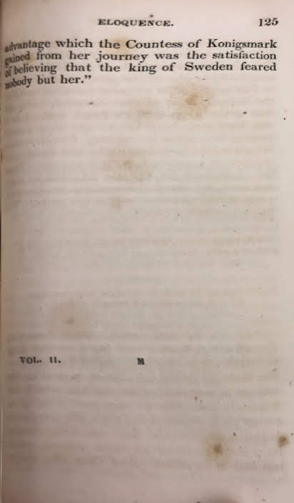

NOBLE DEEDS
NOBLE DEEDS
----
OF----
WOMAN."Noble examples excite us to noble deeds."IN TWO VOLUMES. VOL. I----
SENECA
----
Philadelphia: CAREY, LEA, AND BLANCHARD. 1836 NOBLE DEEDS
NOBLE DEEDS
----
OF----
WOMAN."Noble examples excite us to noble deeds."IN TWO VOLUMES. VOL. I----
SENECA
----
Philadelphia: CAREY, LEA, AND BLANCHARD. 1836
Volume One of Noble Deeds of Woman
 PREFACE.
PREFACE.
THE pleasure experienced by the author in perusing the scattered records of female excellence, gave rise to the idea that an interesting selection might be made from them, and prove not only instructive but useful. The acknowledged superiority of example over precept confirmed this opinion, and the ensuing narratives have been chosen as most suitable to the various conditions and trials of life.
Woman,— to whose fostering care the direction of infaney is
intrusted,— to whom manhood is indebted for mental recreations and
for consolation in difficulties,— upon whom also man, in declining
years depends for solace and support,— too often betrays her
incapacity to fulfil the important duties she is called upon to
undertake. When thus circumstanced she frequently fails in the
performance of a mother's tender obligations, and she not only loses the
affections, but sinks in the estimation, of her husband; —, or
immersed in the dissipations of society, she neglects to attend to those
more sacred offices on which even her own happiness depends. To the just
fulfillment of these, it is necessary she should think, feel, and
act correctly; yet this cannot be expected while the ornamental
accomplishments now cultivated with so much care, are allowed to
supersede the more valuable acquirements. Painting, music, and dancing
mauy afford agreeable recreation, but they must ever yield to the more
important pursuits of life; the strict observance of the duties imposed
on mother, daughter, sister, wife, and friend, commands the esteem and
respect of others, and confers lasting happiness on ourselves. In the
discharge of these how delightful to contemplate the examples of a
Cornelia, a
Lady Russel, and an
Elizabeth Cazotte!
The performance of the domestic obligations, which are more calculated to
court the esteem of the few than to excite the admiration of many, is
the natural province of the sex: but Woman's sphere of action is not, at
all times, to be so circumscribed: her intergrity, fortitude, courage,
and presence of mind, may frequently be called forth by adventitious
circumstances. In extraordinary times, as those in which we live, she
may be placed in situations of difficultly, if not danger: let her then
prepare herself to encounter them, by studying the examples now
presented for her contemplation. Then, should her integrity be
questioned, she may imitate that of the Duchess de
Longueville; — should afflications
overtake her, she may learn fortitute from Madame
Roland; — should unexpected dangers
await her, she may acquire courage and presence of mind from the conduct
of Maragaret of Anjou; —
and should the hour of trail occur, Britain will
find her not deficient in patriotism: her trinkets and money will then,
like those of the ladies of France
and Rome, be laid on the altar of
the her country. Her's will be the NOBLE DEEDS OF WOMAN! by uniting the
sublime virtue of patriotism with the sublime virtue of patriotism with
the exercise of every domestic and social duty!
London; June 1st, 1835
 Hospitality.
Hospitality.
----
ANACONA.---DUCHESS OF FERRARA.---MRS. GAUNT.---HIGHLAND WIDOW.---MRS. GORDON.---AFRICAN HOSPITALITY.---MADAME BOUQUET.---FAITHFUL FRENCHWOMAN.---MADAME PAYSAC.---MADAME RUVILLY.
----
"Ask the gray pilgrim by the surges cast On hostile shores, and numbed beneath the blast, Ask who revived him? who the hearth began To kindle? who with spilling goblet ran? Oh! he will dart one spark of youthful flame, And clasp his withered hands, and Woman name.” BARRETT.
HOSPITALITY has ever been a distinguishing characteristic of Woman; compassion not only graces the educated and polished European lady, but is equally inherent in the bosom of the wild unlettered savage, and their distressed fellow-creatures find a ready home and shelter with both: thus the shipwrecked mariner and the wayworn traveller surviving their perils, return to their native country to unite theirs to the many testimonies already received of the charity and hospitality of the female sex.

"Haste, gentle lady, haste—there waits A noble stranger at the gates." SIR WALTER SCOTT
WASHINGTON IRVING, in his Life of Columbus, gives an interesting account of Anacaona, widow of Caonabo, who, after the capture of her husband by the Spaniards, had taken refuge with her brother, the Cacique Behechio, who governed the province of Xaragua.
On the death of Behechio, Anacaona succeeded to the government. Her magnanimous spirit was evinced in her amicable treatment of the Spaniards, towards whom, notwithstanding the ruin in which they had involved her husband, who died their prisoner, she appears to have entertained no vindictive feeling.
Notwithstanding the friendly behaviour of Anacaona, Ovando, the Spanish general, imagined that there was a deep-laid conspiracy, among the Indians of Xaragua, to rise upon the Spaniards; and he "set out for that prodvince, at the head of three hundred foot soldiers, armed with swords, arquebuses, and crossbows, and seventy horsemen, with cuirasses, bucklers, and lances. He pretended that he was going on a mere visit to Anacaona, and to make an arrangement about the payment of tribute.
"When Anacaona heard of this intended visit, she sent to all her
tributary caciques, and to all her principal subjects, to assemble at
her chief town, that they might receive the commander of the Spaniards
with becoming ho-  mage and distinction. As Ovando, at the head of
his little army, approached, she went forth to meet him, according to
the custom of her nation, attended by a great train of her most
distinguished subjects, male and female. They received the Spaniards
with the popular areytos, their national songs; the young women waving
palm branches, and dancing before them.
mage and distinction. As Ovando, at the head of
his little army, approached, she went forth to meet him, according to
the custom of her nation, attended by a great train of her most
distinguished subjects, male and female. They received the Spaniards
with the popular areytos, their national songs; the young women waving
palm branches, and dancing before them.
"Anacaona treated the governor with that natural graciousness and dignity for which she was celebrated. She gave him the largest house in the place for his residence, and his people were quartered in the houses adjoining. For several days the Spaniards were entertained with all the natural luxuries that the province afforded. National songs and dances, and games, were performed for their amusement, and there was every outward demonstration of the same hospitality, the same amity, that Anacaona had uniformly shown to white men.
"Notwithstanding all this kindness, Ovando being persuaded that Anacaona secretly meditated a massacre of himself and his followers, resolved to anticipate the supposed plot by a counter-artifice, and to overwhelm this defenceless people in an indiscriminate and bloody vengeance.
"He accordingly invited the Indians, in return, to witness certain
national games of his country; and amongst other diversions was to be a
tilting match, or joust with reeds, and all the Spaniards were secretly
instructed to arm themselves with weapons of a more deadly
 character, and to be in readiness for the
signal of their commander.
character, and to be in readiness for the
signal of their commander.
Anacaona, with her daughter, attendants, and all the caciques, were assembled in a house which commanded a view of the square in which the joust was to take place. "Ovando, perceiving that every thing was disposed according to his orders, gave the fatal signal. The house was surrounded and no one permitted to escape. The Spaniards entered, and seizing upon the caciques, bound them to the posts which supported the roof. Anacaona was led forth a prisoner. The unhappy caciques were then put to horrible tortures, until some of them, in the extremity of anguish, were made to accuse the queen and themselves of the plot with which they were charged. When this cruel mockery of judicial form had been executed, instead of preserving them for after-examination, fire was set to the house, and all the caciques perished miserably in the flames."
Mean while a most horrid massacre took place without; the armed horseman,
sparing neither age nor sex, put the defenceless throng to an
indiscriminate slaughter, and the princess Anacaona was carried in
chains to San Domingo. "The mockery of a trial," continues the
historian, "was given her, in which she was found guilty, on the
confessions which had been wrung by tortures, from her subjects, and on
the testimony of their butchers; and she was ignominiously hanged, and
in the presence of  the people whom she had so long and so signally
befriended."
the people whom she had so long and so signally
befriended."
"This ancient fortress of my race Shall be misfortune’s resting-place, Shelter and shield of the distress’d, No slaughter-house for shipwreck’d guest."
"RENATA, Duchess of Ferrara, daughter of Louis the Twelfth, and of Anne of Breagne, after her conversion to the Protestant faith, and her retirement to the castle of Montargis, was distinguished by her hospitality and goodness. She displayed her kindness more particularly towards her countrymen: every Frenchman, who in travelling through Ferrara was exposed to want or sickness, experienced her benevolence and liberality. After the return of the Duke of Guise from Italy, she saved, as the army passed through Ferrara, more than ten thousand of the French from perishing by want and hardships. Her steward representing to her the enormous sums which her bounty thus expended, 'What,' replied she, 'would you have me do? These are my countrymen, who would have been my subjects but for the Salic law.' During the civil wars in France, she retired into her city and castle of Montargis, where she received and supported numbers of distressed persons, who had been driven from their homes and estates."
"I myself," says Brantome, "during the second period of these troubles,
when the force  of Gascoigne, consisting of eight thousand men, headed by
Messrs. De Ferrides and De Mousales, were marching towards the king, and
passing by Montargis, stopped as
in duty bound to pay my respects to her. I myself saw, in her castle,
above three hundred protestants, who had fled thither from all parts of
the country. An old steward whom I had known at Ferrara and in France, protested to me that she fed daily more than
three hundred people, who had taken refuge with her."
of Gascoigne, consisting of eight thousand men, headed by
Messrs. De Ferrides and De Mousales, were marching towards the king, and
passing by Montargis, stopped as
in duty bound to pay my respects to her. I myself saw, in her castle,
above three hundred protestants, who had fled thither from all parts of
the country. An old steward whom I had known at Ferrara and in France, protested to me that she fed daily more than
three hundred people, who had taken refuge with her."
----
"If a hope of safety rest, 'Tis on the sacred name of guest."
HOSPITALITY has been too often dangerous to
those by whom it has been exercised: during the proscriptions of
Marius and Sylla, it was considered a crime against the state to
afford shelter to the outlawed fugitives, and punished by the extreme
penalty of the law. Yet, in those as well as later times, women have
been found who, with a courage superior to all hazard, have dared to
acquit themselves of this first duty to society, and who have chosen to
peril their lives and fortunes, rather than violate its sacred ties. It
is a painful reflection that such self-devoted and heroic beings should
have sometimes experienced the basest ingratitude from the objects of
their bounty; yet it was by no means an infrequent occurrence for those,
whose disin-  terested compassion had generously bestowed
shelter and support to the houseless wanderer, to be, in return for such
favours, denounced as traitors, for the sake of the paltry reward
offered for their apprehension.
terested compassion had generously bestowed
shelter and support to the houseless wanderer, to be, in return for such
favours, denounced as traitors, for the sake of the paltry reward
offered for their apprehension.
An example of this occurred in the reign of James the Second. "During Monmouth's rebellion, one of his followers, knowing the humane disposition of a lady of the name of Gaunt, whose life was one continued exercise of beneficence, fled to her house, where he was concealed and maintained for some time. Hearing, however, of the proclamation which promised an indemnity and reward to those who discovered such as harboured the rebels, he betrayed his benefactress; and such was the spirit of justice and equity which prevailed among the ministers, that the ungrateful wretch was pardoned, and recompensed for his treachery, while his benefactress was burnt alive for her charity towards him."
----
"Take with free welcome what our hands prepare, Such food as falls to simple servants' share." POPE'S HOMER.
"AAFTER the battle of Culloden, so fatal to the last hopes of the House of Stuart, Colonel Stuart, attended by his friend, Mr. Hamilton of Balgour, sought his personal safety in flight. They approached a lonely hut in the Highlands, to which Mr. Hamilton went to ask

shelter for an unfortunate stranger. The good woman opened her wattled door, and his looks comprehended at once that a poor refugee was in distress: though she did not understand one word of English, she followed Mr. Hamilton to the spot where he had left Colonel Stuart, who addressed her in her native tongue, and as his case was desperate, confided to her their names and their peril. She told him the cattle were pasturing near her cottage; but if he would wait a little, she would send the herds out of view, and get him removed without exciting suspicion. Having succeeded in this, she kept them concealed for several days; and when they at length quitted their humane preserver, she loaded them with provisions, accompanied them for several miles, pointing out the unfrequented paths, or where they might venture to ask for a lodging, refusing at the same time the slightest remuneration. What adds to the merit of the action, is that the poor widow had lost two sons in the king’s cause, to which she was strongly attached."
----
"O, Woman! When pain and anguish wring the brow, A ministering angel thou!" SIR WALTER SCOTT.
THE honourable and hospitable conduct of the
Highlanders was well illustrated, at the  same period, by the conduct of a clergyman and
his wife, of the name of Gordon.
same period, by the conduct of a clergyman and
his wife, of the name of Gordon.
"After the battle of Culloden,
immense numbers of officers and men received refreshments from Mrs. Gordon, and every part of the manse,
except one room, was filled with the wounded. To guard against
treachery, Mrs. Gordon lodged the fugitives in separate apartments. So
cautiously did she conceal from each, the condition of the others, that
the first request was, that they would not intrust her with their real
names: she could serve them under a fictitious appellation. In this
manner a father and son were five months under her roof, without knowing
their proximity. Colonel Stuart, being a native of the neighbouring
country, was personally known, and, with his usual impetuosity, had
introduced his friend Mr. Hamilton, before Mrs. Gordon could ask him to
give only a borrowed name. However, she said, the gentleman must in
future assume the designation of Mr. Milton, and the colonel himself
must be Mr. Grey. She gave separate chambers to each, and as Colonel
Stuart was the most obnoxious to government, the window of his room
allowed a speedy retreat to the lake, where a boat was constantly in
waiting, to facilitate his escape to the upper district of Badenoch, in case of a close pursuit by
the military stationed all around, to intercept the outlaws. In a few
days Colonel Stuart found he must betake himself to his friends in the
mountains; but the inquest in that quarter be-  ing more rigid, he returned to Alvey, and
hearing music and dancing, he got in at the window of his own room and
went to bed. He had been two days and three nights without rest,
sometimes hidden in caverns, sometimes even obliged to strip and plunge
into a bog, covering his head with branches of birch, which he carried
for the express purpose; and sometimes, like Charles the Second, he
eluded his pursuers by ascending a tree. He was now disposed to sleep
soundly, little suspecting that several officers were in the house. Mrs.
Gordon had heard they were in search of Colonel Stuart. She hoped he was
far off, but trembled for other guests; and the ready expedient of
collecting some young people, and appearing heedlessly merry, she knew
would divert suspicion. The officers, in place of ransacking the manse,
joined the merry dancers, and went away after supper, convinced that a
family so jovial could have no concealments. Some of the company were to
sleep at the manse. Mrs. Gordon had then no spare room, except that
occupied by her daughter; but she made as many beds as the floor could
contain, and the young lady with her cousin were removed to Mr. Grey’s
room. They undressed. One of them attempted to raise the bedclothes,
when Colonel Stuart awoke. He had loaded pistols, and his sword
unsheathed always beside him when he lay down to rest. Providentially
the sword came first to hand. The candle had been extinguished, but a
gleam of the moon showed a
ing more rigid, he returned to Alvey, and
hearing music and dancing, he got in at the window of his own room and
went to bed. He had been two days and three nights without rest,
sometimes hidden in caverns, sometimes even obliged to strip and plunge
into a bog, covering his head with branches of birch, which he carried
for the express purpose; and sometimes, like Charles the Second, he
eluded his pursuers by ascending a tree. He was now disposed to sleep
soundly, little suspecting that several officers were in the house. Mrs.
Gordon had heard they were in search of Colonel Stuart. She hoped he was
far off, but trembled for other guests; and the ready expedient of
collecting some young people, and appearing heedlessly merry, she knew
would divert suspicion. The officers, in place of ransacking the manse,
joined the merry dancers, and went away after supper, convinced that a
family so jovial could have no concealments. Some of the company were to
sleep at the manse. Mrs. Gordon had then no spare room, except that
occupied by her daughter; but she made as many beds as the floor could
contain, and the young lady with her cousin were removed to Mr. Grey’s
room. They undressed. One of them attempted to raise the bedclothes,
when Colonel Stuart awoke. He had loaded pistols, and his sword
unsheathed always beside him when he lay down to rest. Providentially
the sword came first to hand. The candle had been extinguished, but a
gleam of the moon showed a  female figure, in time to advert the fatal
thrust. Had Colonel Stuart seized the pistol, it must have been too late
to recognize the daughter of his benefactress. The shock of a bare
possibility of taking her life, he said, was more overwhelming than all
his past misfortunes. She was Mrs. Gordon’s only child."
female figure, in time to advert the fatal
thrust. Had Colonel Stuart seized the pistol, it must have been too late
to recognize the daughter of his benefactress. The shock of a bare
possibility of taking her life, he said, was more overwhelming than all
his past misfortunes. She was Mrs. Gordon’s only child."
Colonel Stuart pays the following tribute to the female sex: "In all our wanderings," says he, "we have preferred applying to the gentler sex. They never rejected us; and, if they could contribute to providing for our safety, after separating from them, we found they had a quick and clear perception of the means, and sympathy to stimulate their exertions, and to render them effectual. Even ladies, who were keen partisans of the House of Hanover, spared neither trouble nor expense in our behalf."
----
"'Tis ours this son of sorrow to relieve, Cheer the sad heart, not let affliction grieve. By Jove the stranger and the poor are sent, And what to those we give, to Jove is lent." POPE'S HOMER.
THE celebrated traveler, Mr. Mungo Park, experienced the hospitality of
the female-sex on many occasions. “In
his first African journey he had arrived at Sego, the capital of the kingdom of Bambarra, and sought to
obtain a passage across the river to that part of the town in which the
king resided; but owing  to the crowd of passengers, he was detained two
hours; during which time his majesty was apprized that a white man,
poorly equipped was about to pass the river, to seek an audience. A
chief was immediately sent, with an express order that the traveler
should not cross without his majesty’s permission, and pointed to a
village at some distance, where it was recommended that the stranger
should pass the night. Park, not a little disconcerted, repaired to the
village; but as the order had not been accompanied with any provision
for his reception, he found every door shut. Turning his horse loose to
graze, he was preparing, as a security from wild beasts, to climb a tree
and sleep among the branches, when a beautiful and affecting incident
occurred, which gives a most pleasing view of the negro character. An
old woman returning from the labours of the field, cast on him a look of
compassion, and desired him to follow her. She led him to an apartment
in her hut, procured a fine fish, which she broiled for his supper, and
spread a mat for him to sleep upon. She then desired her maidens, who
had been gazing in fixed astonishment at the white man, to resume their
tasks, which they continued to ply through a great part of the night.
They cheered their labours with a song, which must have been composed
ex tempore, since Mr. Park, with deep
emotion, discovered that he himself was the subject of it. It said, in a
strain of affecting simplicity,—‘The winds roared, and the rains
fell. The
to the crowd of passengers, he was detained two
hours; during which time his majesty was apprized that a white man,
poorly equipped was about to pass the river, to seek an audience. A
chief was immediately sent, with an express order that the traveler
should not cross without his majesty’s permission, and pointed to a
village at some distance, where it was recommended that the stranger
should pass the night. Park, not a little disconcerted, repaired to the
village; but as the order had not been accompanied with any provision
for his reception, he found every door shut. Turning his horse loose to
graze, he was preparing, as a security from wild beasts, to climb a tree
and sleep among the branches, when a beautiful and affecting incident
occurred, which gives a most pleasing view of the negro character. An
old woman returning from the labours of the field, cast on him a look of
compassion, and desired him to follow her. She led him to an apartment
in her hut, procured a fine fish, which she broiled for his supper, and
spread a mat for him to sleep upon. She then desired her maidens, who
had been gazing in fixed astonishment at the white man, to resume their
tasks, which they continued to ply through a great part of the night.
They cheered their labours with a song, which must have been composed
ex tempore, since Mr. Park, with deep
emotion, discovered that he himself was the subject of it. It said, in a
strain of affecting simplicity,—‘The winds roared, and the rains
fell. The  poor white man, faint and weary, came and sat
under our tree. He has no mother to bring hi milk, no wife to grind his
corn.—Chorus—Let us pity the white man, no
mother has he, &c.’ Our traveler was much affected, and the next
morning could not depart without requesting his landlady’s acceptance of
the only gift he had left, two out of the four brass buttons that still
remained on his waistcoat."
poor white man, faint and weary, came and sat
under our tree. He has no mother to bring hi milk, no wife to grind his
corn.—Chorus—Let us pity the white man, no
mother has he, &c.’ Our traveler was much affected, and the next
morning could not depart without requesting his landlady’s acceptance of
the only gift he had left, two out of the four brass buttons that still
remained on his waistcoat."
----
"Is aught so fair In all the dewy landscapes of the spring, In the bright eye of Hesper or the morn, In Nature’s fairest forms, is aught so fair As virtuous friendship? As the candid blush Of him who strives with fortune to be just? The graceful tear that streams for others’ woes? Or the mild majesty of private life?" AKENSIDE.
"WHEN, at the period of the French Revolution,
the chiefs of Gironde party were fugitives in the south of France, and every where sought that
asylum which was too often denied them by self-love and cowardice,
Gaudet found a place of succour and safety in the house of one of his
female relatives, whose name was Bouquet, not only for himself, but also for his friend
Salles. The news of this unexpected relief being carried to three
companies of the proscribed Deputies, they determined to beg this
courageous woman to permit them to share in the retreat of their
friends. A  faithful messenger was found, and returned in a
few hours with the answer. Madame Bouquet invited them to come; but, at
the same time, recommended them not to approach her house till midnight,
and to take every possible precaution not to be perceived by anyone;
their safety in her house, which was what occupied her thoughts,
depended greatly on these preliminary conditions.
faithful messenger was found, and returned in a
few hours with the answer. Madame Bouquet invited them to come; but, at
the same time, recommended them not to approach her house till midnight,
and to take every possible precaution not to be perceived by anyone;
their safety in her house, which was what occupied her thoughts,
depended greatly on these preliminary conditions.
"They arrived at midnight. They found their friends lodged thirty feet under ground, in a large vault, the entrance to which was so concealed that it was impossible for a person ignorant of the circumstance to perceive it.
"The continual residence of five men in this cellar, although it was very spacious, rendered the air so corrupt that, as it could not be renewed but with great difficulty, Madame Bouquet contrived, in another part of the house, a second asylum, more healthy, and almost as secure. A few days afterwards, Buzot and Petion informed them by letter, that having within fifteen days changed their place of retreat seven times, they were now reduced to the greatest distress. 'Let them both come,' exclaimed this generous woman.
"All this time not a day passed without Madame Bouquet being menaced with
a domiciliary visit, not a day in which the guillotine did not lay some
heads in the dust. Too generous not to be liable to suspicion, this
heroic woman each day heard the satellites of tyrrany swear, as they
passed her habitation, that they would burn alive in their houses all
 who gave shelter to the proscribed
Deputies.
who gave shelter to the proscribed
Deputies.
"'Well,' said she, 'let these inquisitors come. I am contented, provided you do not take upon yourselves to receive them; all that fear is, that they will arrest me, and then—what will become of you?'
"Petion and Buzot arrived, and then there were seven of them. The difficulty to provide for them was great, provisions being extremely scarce in the department. Madame Bouquet’s house was allowed by the municipality only one pound of bread per day; but, fortunately, she had a stock of potatoes and dried kidney-beans. To save breakfast, it was agreed that her guests should not rise till noon. Vegetable soup was their whole dinner. After the day had closed, the Deputies silently and cautiously left their retreat, and assembled round their benefactress. She was in the midst of them as a mother among her children, for whom she devotes her life. Sometimes a morsel of beef, procured with great difficulty, an egg or two, some vegetables, and a little milk, formed the supper, of which the hostess ate but little, however entreated, the better to support her guests.
"A month stole away in this peaceful security, with which was mingled the
sweet enjoyment of generous affection and grateful friendship; when the
Deputies, having some unusual reason to fear for the safety of their
benefactress, forcibly expressed to her their appre-
 hensions. 'Have I not lived sufficiently long?'
replied this admirable woman, ‘having given you shelter? And is not
death all that is to be desired, when one has done all the good
possible?'
hensions. 'Have I not lived sufficiently long?'
replied this admirable woman, ‘having given you shelter? And is not
death all that is to be desired, when one has done all the good
possible?'
"A circumstance which adds infinite value to this generosity was, that Madame Bouquet carefully concealed from her guests the uneasiness which secretly consumed her, occasioned by one of her relations, who had formerly been the intimate friend of Guadet. This man having learned what passed in Madame Bouquet’s house, set in action every means his mind could suggest, composed of falsehoods and artifices, the fruits of a pusillanimous temper and a miserable self-love, to induce her to banish the fugitives from her house. Every day he came to her with stories more terrible one than another. Sometimes he declared that he felt himself bound to denounce traitors put out of the sanction of the law; and then he would affect strong remonstrances in behalf of a family endangered by her imprudent conduct. He sometimes acted as if his mind was disordered by the terrors that, on her account, he indulged in; and, at length, fearing that he would take some sudden and desperate measure, endangering the lives of the Deputies, she felt it justice to them, to lay her situation before them. Her voice was almost stifled with grief as she spoke to them.
"There was but one course for the Deputies to take; they resolved to quit
their happy and peaceful asylum, and the moment of their separation, so
mournful to all, and so fatal and  eternal to most of them, was fixed for the
following night.
eternal to most of them, was fixed for the
following night.
"Sad effects of civil dissension! Exemplary virtue passes for a crime; and instead of an altar reared to their glory, those whom it actuates are sent to the scaffold!
"Suspected of having afforded an asylum to the fugitive deputies, it was not long before Madame Bouquet was arrested, together with the whole family of Guadet. It was well known with what tenderness and ingenuity the father of that Deputy sought to save his son, who, with his friend Salles, had taken refuge under his roof. Carried before the Revolutionary Tribunal of Bourdeaux, his judges were too prudent to question this venerable man concerning the concealment of his son; even they dreaded the touching voice of nature, and the indignation of virtue. He was simply asked why he had given asylum to Salles; to which the old man answered by clasping his hands, and raising them to Heaven. Witness of this afflicting scene, Madame Bouquet, as vehement in her indignation as she had been impassioned in her protection of the Deputies, had not power to listen in silence to such an interrogatory.
"'Yes, monsters,' she cried, 'beasts of prey, fed with human blood! If humanity, if family affections are crimes, we all merit death.' Throwing herself into the arms of the elder Guadet, she burst into tears, adding, as she pressed the old man to her bosom, 'we have now only to die.'

"The Tribunal, perceiving the increasing interest in the spectators of this affecting scene hastily closed the trial by pronouncing the fatal sentence of death.
"Thus fell this admirable woman, whose magnanimity does as much honour to human nature, as her execution disgraces the system under which she died."
----
"Ah! why should virtue dread the frowns of fate? Hers what no wealth can win, no power create!" A little world of clear and cloudless day, Nor wreck'd by storms, nor moulder'd by decay; A world, with memory's ceaseless sunshine blest, The home of happiness, an honest breast." ROGERS.
"ANOTHER outlawed Deputy, Lanjuinais, took
refuge at Rennes, at a house
belonging to his mother, and of which an old female domestic had the
care. The fear of terrifying this poor
woman caused him, at first, to conceal from her his real
situation; but having learnt from the public papers the execution of
Guadet, at Bourdeaux, and that the
government had extended their inveterate proscriptions to those friends
of the outlawed Deputies who should give them shelter, and even to the
domestics who would not reveal the places of their concealment, he
determined immediately to declare himself, and prevail upon her to shun
the impending danger by instantly quitting the house. The declaration of
his misfortunes, so far from influencing this affectionate  creature to avoid a participation of them, only
made her resolute not to abandon him in the hour of danger. 'It is
nothing to die,' said she, 'but it is a great deal to save the life of
one’s master.'
creature to avoid a participation of them, only
made her resolute not to abandon him in the hour of danger. 'It is
nothing to die,' said she, 'but it is a great deal to save the life of
one’s master.'
"In vain Lanjuinais remonstrated, entreated, and even commanded that she should think of her own safety; it was enough, he assured her, that she kept the secret of his asylum; while to remain near him, served but to endanger her own life, without adding to the security of his. She rejected his reasons, and persisted to demand, as a special favour, the privilege of remaining with him. She prevailed, and through the zeal and exertions of this worthy domestic, Lanjuinais finally escaped the researches of the government until the fall of Robespierre, when his benefactress received, in the liberty and safety of her master, an ample reward for her toils and virtuous perseverance."
----
"What is this passing scene? A peevish April day! A little sun, a little rain, And then night sweeps along the plains, And all things fade away." KIRKE WHITE.
"RABAUD DD ST. ETIENNE also was
compelled to fly from place to place, every moment in danger of falling
into the hands of his pursuers. Madame
Paysac, an inhabitant of
 Paris, having learnt that he was
concealed somewhere in that city, took every possible means to discover
his retreat, that she might offer him a more secure asylum in her own
house. The worthy St. Etienne
refused to avail himself of a friendship that could scarcely fail to
entail destruction on such a generous being, but Madame Paysac would
admit of no denial.
Paris, having learnt that he was
concealed somewhere in that city, took every possible means to discover
his retreat, that she might offer him a more secure asylum in her own
house. The worthy St. Etienne
refused to avail himself of a friendship that could scarcely fail to
entail destruction on such a generous being, but Madame Paysac would
admit of no denial.
"'What,' said she, 'because there is some danger to be hazarded in the attempt to save you, would you have me leave you to perish? What merit is there in benevolence that is exercised only when there is no need of it?'
"The scruples of St. Etienne were silenced by the perseverance of his friend; he was so received into her house, and partook of every consolation his miserable state would admit of. But the restless vigilance of the government soon discovered the retreat of the unfortunate St. Etienne, and the benevolent Madame Paysac speedily followed him to the guillotine with the same intrepidity she had shown in confronting danger to perfect his safety.
"Stranger! whoe'er thou art, securely rest Affiane'd in my faith, a friendly guest." POPE
"IN the city of Brest, a stranger one day presented himself before a
lady named Ruvilly, and besought her to grant him an asylum from  the dangers of proscription. There was
something in the appearance of this stranger that at once inspired
respect and confidence; his gray hairs, the traces that sorrow had left
on countenance, greatly affected Madame
Ruvilly, whose compassionate heart was ever alive to the
claims of humanity. She did not consider her own danger, she did not
even inquire who the person was to whom she was about to give a shelter
that might involve her in utter ruin,—he was unfortunate, and
Madame Ruvilly could not resist such a title. She concealed him, and
sought to lessen the sense of his misfortunes by her kindness and
attentions.
the dangers of proscription. There was
something in the appearance of this stranger that at once inspired
respect and confidence; his gray hairs, the traces that sorrow had left
on countenance, greatly affected Madame
Ruvilly, whose compassionate heart was ever alive to the
claims of humanity. She did not consider her own danger, she did not
even inquire who the person was to whom she was about to give a shelter
that might involve her in utter ruin,—he was unfortunate, and
Madame Ruvilly could not resist such a title. She concealed him, and
sought to lessen the sense of his misfortunes by her kindness and
attentions.
"At the expiration of two days, the stranger came to take leave of her. Madame Ruvilly, whose pity and delicacy had forbade her to question him, could not forbear expressing her astonishment at his abrupt departure. 'I am, Madam,' said he 'a priest; if I remain longer here my proscription will extend its fatal consequences to you. Suffer me to depart instantly, while you are yet safe, that I may not have the additional misery of bringing you to destruction.'
"'But where will you go?' said Madame Ruvilly. 'God will direct me,'
answered the stranger.—'What!' exclaimed Madame Ruvilly, 'know you
not where to seek a retreat, and would you have me expose you to such
danger? Ah no! I cannot consent to it. The more unprotected you are, the
more it is my duty to shelter you. I beseech you to remain  in this house, at least till a moment of less
danger.'
in this house, at least till a moment of less
danger.'
"The old man resisted so strongly the humane entreaties of Madame Ruvilly, that he came off victor in the generous contest; but though no one but a sister of Madame Ruvilly witnessed the scene, the traces of such generous hospitality were too soon detected. When summoned before the Revolutionary Tribunal, Madame Ruvilly avowed the only service she had rendered to the old priest; her only regret was the afflicting spectacle of her sister who was condemned to death, for not having denounced her to the Tribunal.
"These two women submitted to death with a pride of having incurred, from such a government, the penalties attached to the performance of a generous action."
 HUMANITY.
HUMANITY.
----
QUEEN BLANCHE.—CONSTANT1A OF ARRAGON.—QUEEN PHILIPPA.—EMPRESS CATHERINE I.—QUEEN CAROLINE—MARIA THERESA.—PRINCESS DI CONTI.—FEMALE CONVICTS.—COURAGEOUS SWISS GIRL.—COUNTESS BURITA. —FRENCH SERVANT-GIRL.—LADIES OF AMERICA.
----
"A fearful gift upon thy heart is laid, Woman! a power to suffer and to love, Therefore thou so canst pity."
"How few like thee, inquire the wretched out, And court the offices of soft humanity! Like thee reserve their raiment for the naked, Reach out their bread to feed the crying orphan, Or mix, their pitying tears with those that weep !" Rowe.
DURING the second regency of Queen Blanche, wife of Louis VIII. of France, which commenced in 1248, the inhabitants of Chatenai and various towns, had, on arbitrary pretences, been imprisoned by the chapter of Paris. The deplorable condition of the French nation at this period was such, that the people were sold dependances with their lands.
A crowd of victims, wanting even the necessaries of life, languished in the prisons of the

chapter. Blanche, touched with their situation, signified her desire that they might be released upon bail, assuring the chapter while she urged her request, that she herself would investigate the affair, and do them all manner of justice. The priests, incensed at an interference from the civil power, alleged, in reply, that the prisoners, whose lives they held at their disposal, were their subjects, over whom no other person had any authority. In defiance of Blanche, and in proof of the power which they thus asserted and abused, they seized also on the women and children whom they had before spared. The sufferings of the prisoners being thus aggravated, many of them perished with famine and pestilential disorders.
The Regent, indignant at the despotism thus insolent and inhuman, determined to use with these merciless oppreisors the last argument of force. Proceeding with her guards to the prison gates, she commanded them to be opened. The soldiers hesitating to by her, she struck, with a stick site held in her hand, the first blow: the stroke being instantly seconded, the gates were quickly destroyed, when a crowd of miserable wretches, their faces squalid and disfigured, and their garments tattered, came forth. Casting themselves at the feet of the Queen, they implored her protection, without which the grace she had conferred upon them could serve but to aggravate their distress. Blanche, having promised to grant their request, took effectual measures for the fulfilment of her engagement.
Seizing upon the revenues of the chapter, she compelled their submission, and even obliged them to affranchise the inhabitants for a certain yearly stipend.
“The quality of mercy is not strain’d ; It droppeth, as the gentle rain from Heav’n Upon the place beneath. It is twice bless’d; It blesseth him that gives, and him that takes.” Shakespeare.
"During the period of the wars between the kingdoms of Naples and Sicily, Charles, prince of Salerno, only son of the King of Naples, was taken prisoner by the Sicilians, and carried by them into Sicily : he was, however, fortunate enough to escape the general massacre of the Neapolitan prisoners, which took place immediately after their arrival in that kingdom.
"Constantia of Arragon, who governed Sicily in the absence of her husband Peter, terrified by the ferocious clamours of the populace, who, on the destruction of the other prisoners, demanded the immediate execution of the Prince, sent him orders to prepare within a few hours for death. Fortunately for Charles, the day appointed for his death was a Friday : he received Constantia's message with an unmoved countenance, calmly replying, “I am well content to die that grievous death, remembering that my Lord and Saviour on this day voluntarily suffered his death and passion.”
“Constantia was recalled to a sense of her

Christian duties by these words, and immediately sent to tell him, ‘that, if he, for respect to that day, would suffer death so contentedly, she, for the love of him who on that day had pardoned his enemies, would pardon him also.’ From that moment she used every means to protect him from the ferocity of the Sicilians ; and by the employment sometimes of sometimes of conciliation, had him at last safely conducted to Arragon."
“ Boast of thy sex, and glory of the throne ! O'er all thy form what matchless graces spread, When thy fair eyes in moist suffusion shone, And from thy cheek the changing crimson fled, As On the neck of Edward's captive foes, To thy afflicted sight the opprobrious cord arose! "Oh ! while the fair with soul-subduing pow'r, On her bent knee their forfeit lives implor'd ; When, like two stars seen through a rushing show'r, Her wat'ry eyes gaz’d earnest on her lord, 'Twas then thy virtues, loveliest queen, outshone Thy Edward's victor-plume, waving o'er Gallia, throne !" Anna Seward.
Philippa, wife of Edward the Third King of England, affords a memorable instance humanity.
When, after the siege of Calais, Sir Walter de Manny returned to the camp of the victorious Edward, bringing with him the noble patriot Eustace de St. Pierre and his fellow hostages ; the monarch inquired, “ Are these the principal inhabitants of Calais ?" " They are,” answered Manny, " not only the principal

Men of Calais, but the principal men in France, if virtue has any share in nobility.” 'Were they delivered peaceably;" inquired Edward : " was there no resistance, no commotion among the people?" "None in the least, Sire. The people would all have perished rather than have delivered the least of these to your Majesty : but they are self-delivered, self-devoted, and come to offer their inestimable heads as an ample equivalent for the ransom thousands."
Edward was secretly piqued at this answer of Manny, but he knew the
privilege of a British subject, and suppressed his resentment. “
Experience," said he, " has ever shown that lenity only serves to invite
people to new crimes. Severity at times is indispensably necessary to
compel subjects to submission.— Go," he cried to an officer, " lead
these men to execution." At this instant the sound of a trumpet was
heard throughout the damp. The queen had just arrived with a
reinforcement of gallant troops from England. Sir Walter de Manny flew
to her Majesty and briefly informed her of the particulars respecting
the six victims. As soon as Philippa had been welcomed by Edward and his
court, her majesty desired a private audience. " My lord," said noble
lady to her royal husband, " the question I am to enter upon, is not
touching the lives of a few mechanics ; it respects the glory of my
Edward, my husband, my king. You think you have sacrificed six of your
enemies, to death. No, my lord, they have sentenced
 themselves. The stage on which they would suffer
would be to them a stage of honour; but to Edward, a stage of shame; a
reproach to his conquests, an indelible stain on his name." These words
flashed conviction on the soul of Edward. " I have done wrong, very
wrong," he exclaimed, " let the execution be instantly staid, and the
captives brought before us." St. Pierre and his friends soon made their
appearance ; when the queen thus addressed them : " Natives of France
inhabitants of Calais! you have put us to a expense of blood and
treasure in the recovery of our just and natural inheritance : but you
have acted up to the best of an erroneous judgment, and we admire and
honour in you that valour and virtue by which we are so long kept out of
our rightful possessions. Noble burghers ! excellent citizens ! though
you were tenfold the enemies of our person and our throne, we can feel
nothing on our part as respect and affection for you. You have been
sufficiently tried. We loose your chains : we snatch you from the
scaffold ; and we thank you for that lesson of humiliation which you
teach us, when you show us that excellence is not of blood, of title, or
station ; that virtue gives a dignity superior to that of kings; that
those whom the Almighty informs with sentiments like yours, are justly
and universally raised above all human distinctions.” “Ah, my country !"
exclaimed St. Pierre, is now that I tremble for you ; Edward only arms
our cities, but Philippa conquers hearts.”
themselves. The stage on which they would suffer
would be to them a stage of honour; but to Edward, a stage of shame; a
reproach to his conquests, an indelible stain on his name." These words
flashed conviction on the soul of Edward. " I have done wrong, very
wrong," he exclaimed, " let the execution be instantly staid, and the
captives brought before us." St. Pierre and his friends soon made their
appearance ; when the queen thus addressed them : " Natives of France
inhabitants of Calais! you have put us to a expense of blood and
treasure in the recovery of our just and natural inheritance : but you
have acted up to the best of an erroneous judgment, and we admire and
honour in you that valour and virtue by which we are so long kept out of
our rightful possessions. Noble burghers ! excellent citizens ! though
you were tenfold the enemies of our person and our throne, we can feel
nothing on our part as respect and affection for you. You have been
sufficiently tried. We loose your chains : we snatch you from the
scaffold ; and we thank you for that lesson of humiliation which you
teach us, when you show us that excellence is not of blood, of title, or
station ; that virtue gives a dignity superior to that of kings; that
those whom the Almighty informs with sentiments like yours, are justly
and universally raised above all human distinctions.” “Ah, my country !"
exclaimed St. Pierre, is now that I tremble for you ; Edward only arms
our cities, but Philippa conquers hearts.”
----

“ Teach me to feel another's woe, To hide the faults I see; That mercy I to others show, That mercy show to me." Pope.
CATHERINE the First, Empress of Russia, was celebrated for her humane and compassionate disposition. Upon many occasions during the lifetime of her husband, the Czar Peter, she exerted all her influence with him in behalf of the unfortunate.
This empress received the following handsome compliment from Motraye, who says, “She had in some sort the government of all his (Peter's) passions, and even saved the lives of a great many persons; she inspired with that humanity, which, in the opinion his subjects, nature seemed to have denied him. A word from her mouth in favour of a wretch just going to be sacrificed to his anger, would disarm him ; but if he was fully resolved gratify that passion, he would give orders for the execution when she was absent, for fear she should plead for the victim." In a word, to use the expression of the celebrated Munich, " Elle était proprement la mediatrice entre la monarque et ses sujets."
After Peter's death the humanity of Catherine was still more remarkable.
She had promised that during her reign nobody should put to death, and
she kept her word. The test malefactors were only condemned to labour in
the mines and at other public works; regulation not less prudent than
humane,  since it rendered their punishment of so
advantage to the state.
since it rendered their punishment of so
advantage to the state.
Catherine was the first sovereign that show this regard to the human species ; and the lenity which she displayed was carried to degree unparalleled in the history of any other nation.
"How ill does it beseem Thy tender years and gentle womanhood, To steel thy breast to pity’s sacred touch ! So weak, so unprotected, is our sex, So constantly expos’d, so very helpless, That did not Heav’n itself enjoin compassion, Yet human policy should make us kind, Lest in the rapid turn of fortune’s wheel We live to need the pity we refuse.” Mrs. Hannah More.
Queen Caroline, wife of George the Second, being informed that
her eldest daughter (after-wards Princess of
Orange,) was accustomed, at going to rest, to employ one
of the ladies of the court in reading aloud to her till she should drop
asleep; and that on one occasion the Princess suffered the lady, who was
indisposed, to continue the fatiguing duty until she fell down in a
swoon, determined to inculcate on her daughter a lesson of humanity. The
next night, the Queen, when in bed, sent for the Princess, and commanded
her to read aloud. After some time her Royal Highness began to be tired
of standing, and paused, in hopes of receiving an order to be seated.
"Proceed,” said her Majesty. In a short  a second pause seemed to plead for the rest.
“Read on," said the Queen again. The Princess again stopped and again
received an order to proceed, till at length, faint and breathless, she
was forced to complain. "Then," said this excellent parent, "if you than
feel the pain of this exercise for one evening only, what must your
attendants feel who do it every night? Hence learn, my daughter, never
to indulge your own ease while you suffer your attendants to endure
unnecessary fatigue.”
a second pause seemed to plead for the rest.
“Read on," said the Queen again. The Princess again stopped and again
received an order to proceed, till at length, faint and breathless, she
was forced to complain. "Then," said this excellent parent, "if you than
feel the pain of this exercise for one evening only, what must your
attendants feel who do it every night? Hence learn, my daughter, never
to indulge your own ease while you suffer your attendants to endure
unnecessary fatigue.”
----
“ Earthly power doth then show like God’s When mercy seasons justice.” Shakespeare.
DURING the reign of the Empress Maria
Theresa, a great scarcity of provisions prevailed in
Bohemia, and numbers of famishing people flocked to the capital,
(Prague,) imploring relief. The governor of the city wrote to court of
Vienna, that the misery of the poor people was at length driving them to
acts of turbulence and outrage, which he had not a sufficient force
either to prevent or suppress. The Empress immediately despatched
General Count Dalton to take the
command at Prague, to which several regiments were ordered to repair by
forced marches. As soon as the Count found himself sufficiently
reinforced, he ordered all the cannon on the ramparts to be turned
against the city ; and hating so dispersed
 his troops that it was impossible for any of the
disaffected to escape, he walked alone into the midst of some thousands
of them who were assembled together, and addressing them with his hat in
his hand, observed, it was not by criminal modes they should seek
relief, because by so doing they must necessarily draw on their heads
the vengeance of government ; he desired therefore, nay, he begged, that
he might not be reduced to the fatal necessity of ordering his troops to
disperse them. The people listened to the Count with great attention,
and replied to him with a coolness which surprised him. They said, his
artillery and his troops had no terrors for them; that what he
threatened them with as rigour, they would consider as mercy ; for a
speedy death with a cannon ball, was infinitely, preferable to the
lingering death which they were suffering by famine. The Count was
melted even to tears. He then addressed them again, and told them that
his heart bled for them but it was his duty to preserve the peace o the
city ; and he would be censured if, by his forbearance and compassion,
that peace was destroyed ; he therefore entreated them as it were for
his sake, to disperse, assuring them that he would immediately transmit
a faithful, representation of their distresses to the Empress, from
whose goodness they had reason to expect every kind of relief.
his troops that it was impossible for any of the
disaffected to escape, he walked alone into the midst of some thousands
of them who were assembled together, and addressing them with his hat in
his hand, observed, it was not by criminal modes they should seek
relief, because by so doing they must necessarily draw on their heads
the vengeance of government ; he desired therefore, nay, he begged, that
he might not be reduced to the fatal necessity of ordering his troops to
disperse them. The people listened to the Count with great attention,
and replied to him with a coolness which surprised him. They said, his
artillery and his troops had no terrors for them; that what he
threatened them with as rigour, they would consider as mercy ; for a
speedy death with a cannon ball, was infinitely, preferable to the
lingering death which they were suffering by famine. The Count was
melted even to tears. He then addressed them again, and told them that
his heart bled for them but it was his duty to preserve the peace o the
city ; and he would be censured if, by his forbearance and compassion,
that peace was destroyed ; he therefore entreated them as it were for
his sake, to disperse, assuring them that he would immediately transmit
a faithful, representation of their distresses to the Empress, from
whose goodness they had reason to expect every kind of relief.
The people whom the dread of death could not move, were filled with
gratitude for the, general's conduct; they instantly began to  disperse, every man cheering him as he passed,
and exclaiming, “ Long live Dalton !"
disperse, every man cheering him as he passed,
and exclaiming, “ Long live Dalton !"
The representation which the Count sent to Vienna, drew tears from the Empress. " Good God!” exclaimed she, " what have my poor people been suffering, without my knowledge! To what cruel miseries have they been exposed, through the ignorance I was in of their dwplorable situation! How greatly am I indebted to the moderation and humanity of Count Dalton, who has saved me from the guilt of being the butcher of my poor starving subjects, and who has painted in such moving colours those distresses, which others, whose duty it was to make them known to me, carefully concealed from my knowledge, representing the rising of the people as the effect of seditious disposition!"
Her Majesty immediately despatched eight hundred wagons, loaded with corn, to Prague ; and sent a letter of thanks to General Dalton, in her own handwriting, for his meritorious behavior on this trying occasion.
----
"Sweet mercy is nobility's true badge." SHAKESPEARE.
THE beautiful and virtuous Princess di
Conti deserves to be mentioned here. At the early age of
nineteen, this illustrious woman sold the whole of her jewels to relieve
the poor during a famine ; an action which most purchase her ID undying
fame. That a woman of her exalted  station should, by the sacrifice of those empty
baubles of vanity and ambition on the shrine of humanity, set such an
example to her sex, is indeed above all praise.
station should, by the sacrifice of those empty
baubles of vanity and ambition on the shrine of humanity, set such an
example to her sex, is indeed above all praise.
----
“We do pray for mercy, And that same pray’r doth teach us all to render The deeds of mercy." SHAKESPEARE.
AT the time the yellow fever broke out Philadelphia, there was great difficulty in procuring nurses for the sick at the hospital. In this dilemma recourse was had to the prison. The apparent danger was stated to the female convicts, and their assistance was requested. The behaviour of these women on the occasion was admirable. As many offered their services as were wanted, and continued faithful till dreadful scene was closed, none of them making any demand for their assistance till all we discharged. When requested to give up their bedsteads for the use of the sick at the hospital they most humanely offered even their bedding resigning willingly any little comforts they possessed to alleviate the wants of their distressed fellow-creatures.
----

“Great Lord of all, By whose good spirit bounteous thoughts are given, And deeds of love performed—be gracious now !"
During a conflict at the farm of Rainerhoff, in the Tyrolese war, in 1809, a young woman, who resided at the house, brought out a small cask of wine, with which to encourage and refresh the peasants ; she had advanced to the scene of action, regardless of the tremendous fire of the Bavarians carrying the wine upon her head, when a bullet struck the cask, and compelled her to let it go. Undaunted by this accident, she endeavoured to repair the mischief, by placing her thumb upon the orifice caused by the ball ; and then encouraged those nearest her to refresh themselves quickly, that she might not remain in her dangerous situation and suffer for her humane generosity to them.
----
" Bid her for others' sorrow pour the tear, For others' safety feel the instinctive fear ; But for herself, scorning the impulse weak, Meet every danger with unaltering cheek." ANNA SEWARD.
DURING the siege of Saragossa in the year 1809, the Countess Burita formed a corps of women
for the relief of the wounded, and for the purpose of carrying
provisions and wine to the soldiers. Many persons, of the most
unquestionable veracity in Saragossa, declared that they had frequently
seen this young, delicate, and beautiful woman, coolly attending to the
duties she had prescribed to herself, in  the midst of the most tremendous fire of shot and
shells ; nor were they ever able to perceive from the first moment that
she entered into these novel scenes, that the idea of personal danger
could produce upon her the slightest effect, or bend her from her
benevolent and patriotic purpose.
the midst of the most tremendous fire of shot and
shells ; nor were they ever able to perceive from the first moment that
she entered into these novel scenes, that the idea of personal danger
could produce upon her the slightest effect, or bend her from her
benevolent and patriotic purpose.
----
“How poor an instrument May do a noble deed !” SHAKESPEARE.
SOME years ago an instance of humanity and presence of mind occurred at a place called Noyon, in France, which deserves to commemorated here.
"Four men, who were employed in cleansing a common sewer, upon opening a
drain, so affected by the foetid vapours, that they unable to ascend.
The lateness of the (for it was eleven at night) rendered it difficult
to procure assistance, and the delay must have been fatal, had not a
young girl , a servant in the
family, with courage and humanity that would have done honour to the
most elevated station, at the hazard of her own life, attempted their
deliverance. This generous girl, who was only seventeen years of age,
was, at her own request, let down several times to poor men by a rope ;
she was so fortunate as to save two of them pretty easily, but, in tying
the third to the cord, which was let down to for that purpose, she found
her breath failing,  and was so much affected by the vapour as to be
in danger of suffocation. In this dreadful situation, she had the
presence of mind to tie herself by her hair to the rope, and was drawn
up almost expiring, with the poor man in whose behalf she had so
humanely exerted herself.
and was so much affected by the vapour as to be
in danger of suffocation. In this dreadful situation, she had the
presence of mind to tie herself by her hair to the rope, and was drawn
up almost expiring, with the poor man in whose behalf she had so
humanely exerted herself.
“ Far from being intimidated by the danger of the enterprise, the moment she recovered her spirits, she insisted upon being let down for the poor creature that remained, which she actually was ; but her exertions this time failed of success, for the unfortunate man was drawn dead.
“ The corporation of the town of Nyon, as a small token of their approbation, presented the generous girl with six hundred livres' and conferred on her the civic crown, with a medal engraved with the arms of the town, her name, a narrative of the action. The Duke of Orleans also sent her five hundred livres, and settled two hundred yearly on her for life."
----
“ ‘Tis truth divine, exhibited on earth, Gives charity her being and her birth.” COWPER
DURING the late war between the Turks and the Greeks, some American ladies, touched by the
hardships and sufferings of the latter people, presented them with a
ship containing money and various articles of wearing-apparel, wrought
by their own hands; an offering which, under  their forlorn situation, must have been highly
acceptable to the unfortunate Greeks.
their forlorn situation, must have been highly
acceptable to the unfortunate Greeks.
The letter ofMrs. Sigourney, of Hartford Connecticut, to the Ladies' Greek Committee of that place, to accompany the contributions prepared for the Archipelago, was as follows :
"United States of America,March 12, 1828, The ladies of Hartford, in Connecticut, to the ladies of Greece."Sisters and Friends,—From the years of childhood your native clime has been theme of our admiration : together with our brothers and our husbands, we early learned to love the country of Homer, Aristides, of Solon, and of Socrates. That enthusiasm which the glory of ancient Greece enkindled in our bosoms, has preserved a fervent friendship for her descendants. We have beheld with deep sympathy the horrors of Turkish domination, and the struggle so long and nobly sustained by them for existence and for liberty.
"The communications of Dr. Howe, since his return from your land, have made us more intimately acquainted with your personal sufferings. He has presented many of you to us in his vivid descriptions, as seeking refuge in caves, and, under the branches of olive trees, listening for the footsteps of the destroyer, and mourning over your dearest ones slain in battle.
"Sisters and friends, our hearts bleed for you! Deprived of your
protectors by the fortune of war, and continually in fear of evils
worse than death, our prayers are with you, in all your  wanderings, your wants and your griefs. In
this vessel (which may God send in safety to your shores) you will
receive a portion of that bounty wherewith He hath blessed us. The
poor among us have given according to their ability, and our little
children have cheerfully aided, that some of you and your children
might have bread to eat, and raiment to put on. Could you but behold
the faces of our little ones brighten, and their eyes sparkle with
joy, while they give up their holidays, that they might work with
their needles for Greece ; could you see those females who earn a
subsistence by labour, gladly casting their mite into our treasury,
and taking hours from their repose that an additional garment might
be furnished for you ; could you witness the active spirit that
pervades all classes of our community, it would cheer for a moment
the darkness and misery of your lot.
wanderings, your wants and your griefs. In
this vessel (which may God send in safety to your shores) you will
receive a portion of that bounty wherewith He hath blessed us. The
poor among us have given according to their ability, and our little
children have cheerfully aided, that some of you and your children
might have bread to eat, and raiment to put on. Could you but behold
the faces of our little ones brighten, and their eyes sparkle with
joy, while they give up their holidays, that they might work with
their needles for Greece ; could you see those females who earn a
subsistence by labour, gladly casting their mite into our treasury,
and taking hours from their repose that an additional garment might
be furnished for you ; could you witness the active spirit that
pervades all classes of our community, it would cheer for a moment
the darkness and misery of your lot.
“We are inhabitants of a part of one of the smallest of the United States, and our donations must therefore, of necessity, be more limited than those from the larger and more wealthy cities ; yet such as we have, we give the name of our dear Saviour, with our blessings and our prayers.
“We know the value of sympathy—how it warms the heart to endure—how it plucks the sting from sorrow—therefore we have written these few lines to assure you, that in the remoter parts of our country, as well as in her high places, you are remembered with pity and affection.

"Sisters and friends, we extend across ocean our hands to you in the fellowship of Christ. We pray that His Cross and the banner of your land may rise together over Crescent and the Minaret—that your sons may hail the freedom of ancient Greece restored, and build again the waste places which oppressor hath trodden down ; and that admitted once more to the felicities of home may gather from past perils and adversities a brighter wreath for the kingdom of Heaven.
"LYDIA H. SIGOURNEY, " Secretary of the Greek Committee of Hartford, Connecticut."Volume Two of Noble Deeds of Woman
 FILIAL AFFECTION.
FILIAL AFFECTION.
----
ROMAN DAUGHTER.—XANTIPPE.—MARGARET ROPER.— MRS. MORICE.—AMERICAN DAUGHTER.— ELIZABETH CAZOTTE.—MADEMOISELLE DE SOMBREUIL.—MADAME DE BOIS BERANGER.—MADEMOISELLE DELLEGLACE.—INFANT VICTIM TO FILIAL AFFECTION.—THE CREOLE AND HIS DAUGHTER.—MADAME DE ROCHEFOUCAULT.
----
"Heaven hath timely tried their youth, Their faith, their patience, and their truth, And sent them here, through hard assays, With a crown of deathless praise." MILTON.
NATURE has implanted in every human breast
a disposition to love and revere the authors of our being, on whom,
from our earliest infancy, we are dependant for every comfort,
convenience, and pleasure in life: every heart which is not wholly
destitute of feeling, must beat with the warmest emotions of
gratitude towards them, and be alive to the tenderness of filial
piety. Thus we find that in all ages of the world, those who have
become truly great, whatever may have been their country, whether
they have been the natives of enlightened Europe, or of a land of unpolished savages, have
always been distinguished, either in their  infancy or at a more advanced period
of life, by some trait of this affection, which appears to form a
basis for all the other virtues.
infancy or at a more advanced period
of life, by some trait of this affection, which appears to form a
basis for all the other virtues.
----
"Can such things be, And overcome us like a summer's cloud, Without our special wonder?" SHAKESPEARE.
THE Roman history furnishes us with two
remarkable examples of filial piety. A Roman lady, of illustrious birth, had for some cause
been condemned to be strangled, and was sent to prison in order to
be put to death. The gaoler, who
had received orders to strangle her, was touched with compassion for
her beauty and misfortunes, and not being able to resolve to kill
her, determined to let her die of hunger. He however consented to
allow her daughter to visit
her in the prison, taking care that she brought her mother no food.
Many days elapsed, during which the daughter's visits were very
frequent: at length the gaoler became surprised that his prisoner
could exist so long without sustenance. His suspicions immediately
rested on the daughter, whom he now determined to watch still more
closely: to his utmost astonishment he found that she nourished her
mother with her own milk. His amazement at this pious and ingenious
invention caused him to inform the triumvir of the circumstance, who
immediately acquainted the praetor with it. The latter,  considering it worthy the public
attention, related it in an assembly of the people. The result was
the pardon of the criminal; and, at the same time, a decree was
passed, that for the future both mother and daughter should be
supported at the public expense. The Romans also raised a Temple
upon the spot, and dedicated it to Filial Piety.
considering it worthy the public
attention, related it in an assembly of the people. The result was
the pardon of the criminal; and, at the same time, a decree was
passed, that for the future both mother and daughter should be
supported at the public expense. The Romans also raised a Temple
upon the spot, and dedicated it to Filial Piety.
----
"My child and father vital nurture crave, Parental, filial, fondness both would save; But if a nursling only one can live, I choose to save the life I cannot give."
XANTIPPE, another Roman lady, supported her aged father Cimonus in a similar manner, in order to preserve his life while in prison. This last circumstance was called the "Roman Charity." Both these pious actions appeared so extraordinary to that people, that they could only account for them by supposing that filial affection was the first law of nature.
----
"'Twas the first time I mourned the dead: It was my heaviest loss, my worst,— My father!—and was thine the first?" L. E. L.
MODERN history commemorates the name of
Margaret Roper, the daughter of Sir Thomas
More, as another illustrious example of this
affection. When Sir Thomas, who had refused to take the oath of
supremacy, was cast into  prison, his daughter, who was
overwhelmed with grief, was, through incessant importunity,
permitted to visit him. Admitted at length to his prison, she
endeavoured, by every argument, expostulation, and entreaty, to
induce him to relent from his purpose. But her eloquence, her
tenderness, and her tears, were alike ineffectual: constant to the
last, the principles of this great and unfortunate man were not to
be shaken. Margaret corresponded with her father during the whole of
his imprisonment, and when deprived of pen and ink, Sir Thomas
contrived to write to her by means of a coal.
prison, his daughter, who was
overwhelmed with grief, was, through incessant importunity,
permitted to visit him. Admitted at length to his prison, she
endeavoured, by every argument, expostulation, and entreaty, to
induce him to relent from his purpose. But her eloquence, her
tenderness, and her tears, were alike ineffectual: constant to the
last, the principles of this great and unfortunate man were not to
be shaken. Margaret corresponded with her father during the whole of
his imprisonment, and when deprived of pen and ink, Sir Thomas
contrived to write to her by means of a coal.
When sentence had been passed upon him, and he was returning towards the Tower, Margaret rushed through the populace and the guards, and, without speaking, threw her arms round her father's neck, clinging closely to him in the stupor of despair. Even the guards melted into compassion at this affecting scene. The fortitude of the noble prisoner seemed for a moment to be shaken with the sight of his daughter's sorrow. Tenderly embracing her, he withdrew himself from her arms. Scarcely however had he proceeded a few paces further, when she again rushed towards him, and, in a paroxysm of sorrow more eloquent than words, threw herself on his bosom. Tears flowed while he down the venerable cheeks of Sir Thomas while he gazed upon her with tender earnestness: having entreated her prayers for him, he bade her affectionately farewell.
Margaret extended her cares to the lifeless  remains of this beloved parent.
Through her interest and exertions, his body was, after his
execution, interred in the Chapel of St. Peter's ad vincula, within the precincts of the Tower: it was
afterwards removed, according to the appointment which had been made
by Sir Thomas during his lifetime, to the chancel of the church of
Chelsea. His head, in conformity with the sentence, having remained
fourteen days exposed upon London Bridge, would have been cast into
the Thames, had it not been purchased by his daughter. Inhumanly
summoned in consequence before the council, Margaret firmly
acknowledged and justified her conduct. Such intrepidity could not
escape King Henry's
vengeance: she was cast into prison, whence, after some vain
attempts to subdue her courage by menaces, she was permitted to
escape, and join her husband and family. At her death, which took
place nine years after these events, the head of her unfortunate
parent was interred with her in her arms, according to some
historians; or, as others say, deposited in a leaden box, and placed
upon her coffin.
remains of this beloved parent.
Through her interest and exertions, his body was, after his
execution, interred in the Chapel of St. Peter's ad vincula, within the precincts of the Tower: it was
afterwards removed, according to the appointment which had been made
by Sir Thomas during his lifetime, to the chancel of the church of
Chelsea. His head, in conformity with the sentence, having remained
fourteen days exposed upon London Bridge, would have been cast into
the Thames, had it not been purchased by his daughter. Inhumanly
summoned in consequence before the council, Margaret firmly
acknowledged and justified her conduct. Such intrepidity could not
escape King Henry's
vengeance: she was cast into prison, whence, after some vain
attempts to subdue her courage by menaces, she was permitted to
escape, and join her husband and family. At her death, which took
place nine years after these events, the head of her unfortunate
parent was interred with her in her arms, according to some
historians; or, as others say, deposited in a leaden box, and placed
upon her coffin.
----
"O glorious trial of exceeding, love, Illustrious evidence, example high!" MILTON.
THE exile of the Bishop of
Rochester gave occasion to a very interesting
exercise of paternal tenderness on the one part, and of filial duty
and affection on the other. What mostly  embittered the banishment of the
Bishop, was regret at leaving behind him his daughter, Mrs.
Morice, in an infirm state of health. A mutual
longing to see one another took fast hold of the father and
daughter; and the lady, though very ill, performed, with great
difficulty and pain, a journey and voyage from Westminster to Bourdeaux, and Toulouse, where Dr. Atterbury resided. Mr. J.
Evans accompanied Mr. and Mrs. Morice on their voyage from
Dover to Bourdeaux, and from thence to
Toulouse; and being present
at Mrs. Morice’s death, in a letter to his brother, dated
Montpelier, 30th November, 1729, gives the following very pathetic
narrative of that event.
embittered the banishment of the
Bishop, was regret at leaving behind him his daughter, Mrs.
Morice, in an infirm state of health. A mutual
longing to see one another took fast hold of the father and
daughter; and the lady, though very ill, performed, with great
difficulty and pain, a journey and voyage from Westminster to Bourdeaux, and Toulouse, where Dr. Atterbury resided. Mr. J.
Evans accompanied Mr. and Mrs. Morice on their voyage from
Dover to Bourdeaux, and from thence to
Toulouse; and being present
at Mrs. Morice’s death, in a letter to his brother, dated
Montpelier, 30th November, 1729, gives the following very pathetic
narrative of that event.
 much, from the change we saw, that
near she was to it, she would scarcely live to reach Toulouse, which we all earnestly
desired to do, since no physician, or other help, could be had in
the poor place where we then were. She herself pressed this matter;
and we well knew that all her desires and wishes were constantly
bent upon seeing her father, whom she hoped to find at Toulouse. She was taken out of bed at
her own desire, and carried to the boat with great difficulty, not
being able to sit in the chair which Mr. Morice had brought from
Bourdeaux, with two
chairmen, purely for the carrying her in and out of the boat more at
ease; and so we parted thence about two o'clock in the morning,
sending two servants, by land, to procure a litter to meet her at
the by landing-place. About five we arrived there; and soon after
six the litter came, which carried Mrs. Morice to the house in
Toulouse, where her father
was expecting her arrival, and not knowing, till then, how near or
how far off she was, though he had despatched a man and horse to get
intelligence of us, who happened to miss us. When the servants, who
had been sent for the litter, returned, she was informed of the
Bishop's being at Toulouse, and
seemed to take new spirits upon it, which, no doubt, were of great
use to enable her to bear going in the litter, which, otherwise, she
could scarce have done even for so short a way. After she had been
put into bed (where, as I told you, she never slept till she slept
her last,) and had a little recovered the fatigue she underwent in
much, from the change we saw, that
near she was to it, she would scarcely live to reach Toulouse, which we all earnestly
desired to do, since no physician, or other help, could be had in
the poor place where we then were. She herself pressed this matter;
and we well knew that all her desires and wishes were constantly
bent upon seeing her father, whom she hoped to find at Toulouse. She was taken out of bed at
her own desire, and carried to the boat with great difficulty, not
being able to sit in the chair which Mr. Morice had brought from
Bourdeaux, with two
chairmen, purely for the carrying her in and out of the boat more at
ease; and so we parted thence about two o'clock in the morning,
sending two servants, by land, to procure a litter to meet her at
the by landing-place. About five we arrived there; and soon after
six the litter came, which carried Mrs. Morice to the house in
Toulouse, where her father
was expecting her arrival, and not knowing, till then, how near or
how far off she was, though he had despatched a man and horse to get
intelligence of us, who happened to miss us. When the servants, who
had been sent for the litter, returned, she was informed of the
Bishop's being at Toulouse, and
seemed to take new spirits upon it, which, no doubt, were of great
use to enable her to bear going in the litter, which, otherwise, she
could scarce have done even for so short a way. After she had been
put into bed (where, as I told you, she never slept till she slept
her last,) and had a little recovered the fatigue she underwent in
 the conveyance from the boat, which
was about a mile, her father, whom she immediately inquired after,
came into her room, and was startled to see her in so very low a
condition. After mutual expressions of concern and tenderness, she
particularly acknowledged the great blessing that was granted her,
of meeting her dear papa; and exerted all the little life that was
in her, in grasping his hands with her utmost force, as she often
did; and told him, 'that meeting was the chief thing she bad
ardently desired.'
"The bishop some time after left her chamber, that she might compose
herself, and that he might give vent to the just grief he was filled
with, to see his beloved child in a manner expiring. But we found
she took no rest: so he soon returned, and then said prayers by her,
and proposed to her receiving the holy sacrament the next morning,
when he hoped she might have been a little refreshed, in order to
it: she embraced the offer with much satisfaction. He then asked
her, for fear of any accident, if she was not desirous to have the
absolution of the church? She declared she was, and begged to have
it. After some little private discourse with her, he gave it to her,
in the form prescribed in 'The Visitation of the Sick,' and she
expressed great comfort of the fort upon receiving it. A physician
had been sent for immediately upon her arrival. When he came, he
gave little hopes, but said all depended upon her manner of passing
that night.
"She once mentioned Dr. Wyntle, who you
the conveyance from the boat, which
was about a mile, her father, whom she immediately inquired after,
came into her room, and was startled to see her in so very low a
condition. After mutual expressions of concern and tenderness, she
particularly acknowledged the great blessing that was granted her,
of meeting her dear papa; and exerted all the little life that was
in her, in grasping his hands with her utmost force, as she often
did; and told him, 'that meeting was the chief thing she bad
ardently desired.'
"The bishop some time after left her chamber, that she might compose
herself, and that he might give vent to the just grief he was filled
with, to see his beloved child in a manner expiring. But we found
she took no rest: so he soon returned, and then said prayers by her,
and proposed to her receiving the holy sacrament the next morning,
when he hoped she might have been a little refreshed, in order to
it: she embraced the offer with much satisfaction. He then asked
her, for fear of any accident, if she was not desirous to have the
absolution of the church? She declared she was, and begged to have
it. After some little private discourse with her, he gave it to her,
in the form prescribed in 'The Visitation of the Sick,' and she
expressed great comfort of the fort upon receiving it. A physician
had been sent for immediately upon her arrival. When he came, he
gave little hopes, but said all depended upon her manner of passing
that night.
"She once mentioned Dr. Wyntle, who you  know had been her physician; and who
had so neglected her before she left England, as never to come near her, according to
his appointment, nor give the least direction for her management in
the long voyage she was about to make. She said to the Bishop 'Dear
papa, has Mr. Morice told you how Dr. Wyntle has served us?' who
answered, 'Yes, my dear, I know it all; but do not let that trouble
you now.' She replied, 'O no, papa, I do not trouble myself about
that I have other things to think of at this time; but I did not
know whether Mr. Morice had told you.'
"Hoping by this time she might incline to take a little rest, her
father and husband retired, it being between eleven and twelve at
night; but about two in the morning she sent one of her women to me,
(who lay on the same floor, in the next room to her,) to desire to
speak to me; and when I came, she said, not seemingly with much
pain, but with such a shortness of breath that she was forced to
breathe after every two or three words, 'Mr. Evans, I have been
waking—these three hours—and would fain—have the sacrament.' I
wondered at her sending for me on that account, her husband and
father being both near at hand; but I found afterwards it was her
unwillingness, by a direct message from herself, too much to alarm
either of them. However, being then not apprized of her reason for
it, I doubted a little of her being in her right senses, and said,
'Madam, would you now receive the
sacrament?' She said, 'Yes, I would, if possible—presently.' Of
know had been her physician; and who
had so neglected her before she left England, as never to come near her, according to
his appointment, nor give the least direction for her management in
the long voyage she was about to make. She said to the Bishop 'Dear
papa, has Mr. Morice told you how Dr. Wyntle has served us?' who
answered, 'Yes, my dear, I know it all; but do not let that trouble
you now.' She replied, 'O no, papa, I do not trouble myself about
that I have other things to think of at this time; but I did not
know whether Mr. Morice had told you.'
"Hoping by this time she might incline to take a little rest, her
father and husband retired, it being between eleven and twelve at
night; but about two in the morning she sent one of her women to me,
(who lay on the same floor, in the next room to her,) to desire to
speak to me; and when I came, she said, not seemingly with much
pain, but with such a shortness of breath that she was forced to
breathe after every two or three words, 'Mr. Evans, I have been
waking—these three hours—and would fain—have the sacrament.' I
wondered at her sending for me on that account, her husband and
father being both near at hand; but I found afterwards it was her
unwillingness, by a direct message from herself, too much to alarm
either of them. However, being then not apprized of her reason for
it, I doubted a little of her being in her right senses, and said,
'Madam, would you now receive the
sacrament?' She said, 'Yes, I would, if possible—presently.' Of  which the Bishop being immediately
advised, as was Mr. Morice, and every thing being prepared, he came,
and administered to her, and to all present, the sacrament; and
afterwards, at her desire, continued repeating the prayers of the
church, till she began to draw very near her end, and then he used
and continued the recommendatory prayer only; she, all the while,
holding her hands in a posture of prayer, and sometimes joining in a
low voice with him.
"After this, her father being gone from the bed-side, she called for
him, (as she had frequently done,) and again said to him, 'Dear
papa—what a blessing is it—that afer such a
long—troublesome—journey—we have the comfort—of this meeting!' And,
indeed, when I reflect upon it, and consider the weak condition she
was in upon the road, the many accidents that happened to retard the
voyage, and the last effort she made, when she was at the worst,
think that that meeting seemed granted by heaven to her continued
fervent prayers for it.
"About this time she called for her husband, (who was always in near
attendance upon her,) and said, 'Dear Mr. Morice—take care of the
children—I know you will.—Remember me—to the Duchess of
Buckingham.'
"She also, in a proper place, recommended her servants to Mr.
Morice.
which the Bishop being immediately
advised, as was Mr. Morice, and every thing being prepared, he came,
and administered to her, and to all present, the sacrament; and
afterwards, at her desire, continued repeating the prayers of the
church, till she began to draw very near her end, and then he used
and continued the recommendatory prayer only; she, all the while,
holding her hands in a posture of prayer, and sometimes joining in a
low voice with him.
"After this, her father being gone from the bed-side, she called for
him, (as she had frequently done,) and again said to him, 'Dear
papa—what a blessing is it—that afer such a
long—troublesome—journey—we have the comfort—of this meeting!' And,
indeed, when I reflect upon it, and consider the weak condition she
was in upon the road, the many accidents that happened to retard the
voyage, and the last effort she made, when she was at the worst,
think that that meeting seemed granted by heaven to her continued
fervent prayers for it.
"About this time she called for her husband, (who was always in near
attendance upon her,) and said, 'Dear Mr. Morice—take care of the
children—I know you will.—Remember me—to the Duchess of
Buckingham.'
"She also, in a proper place, recommended her servants to Mr.
Morice.
"She now found her feet cold, and ordered them to be rubbed, at the
same time calling for her broth; but when it came, not being able to
 swallow it, she turned herself on her
left side, and rested her head on her left hand, which she doubled,
extending her right hand and arm over the bed-clothes; and in this
posture continued drawing her breath shorter and shorter, but with
the least emotion that possibly could be, till she at last expired,
a quarter before four o'clock, on Tuesday morning, 8th November,
NS.
swallow it, she turned herself on her
left side, and rested her head on her left hand, which she doubled,
extending her right hand and arm over the bed-clothes; and in this
posture continued drawing her breath shorter and shorter, but with
the least emotion that possibly could be, till she at last expired,
a quarter before four o'clock, on Tuesday morning, 8th November,
NS.
The following epitaph, written by Pope, on this striking example of affection, is too interesting to be omitted here.
IS ATTERBURY, BISHOP OF ROCHESTER, —Who died in exile, at Paris, 1732, (his only daughter having expired in his arms, immediately after she arrived in France to see him.)
SHE. Yes we have lived—one pang and then we part ! May heaven, dear Father ! now have all thy heart ; Yet, ah ! how once we lov'd, remember still, Till you are dust like me.
HE. Dear shade ! I will Then mix this dust with thine-0 spotless ghost ! 0 more than fortune, friends, or country lost! Is there on earth one care, one wish beside, Yes—save my country,-heaven,— He said and dy'd.
----

"'Tis thine on ev'ry heart to grave thy praise, A monument which Worth alone can raise.” BROOME.
FROM the preceding illustrious sample of the power of filial affection, we turn to one not less affecting, though displayed in a humbler path of life. In the severe winter of 1783, Which was a time of general distress at New York, an aged couple found themselves reduced to their last stick of wood. They had been supported by the industry of a daughter who lived with them, but who now found herself unable to procure them either fuel or provisions. Overcome with grief at their destitute situation, she yet devised an expedient by which they might be rescued from the emergency. She had accidentally heard that a dentist had advertised or to give three guineas for every only sound fore-tooth, provided only that he was allowed to extract it himself: the generous girl, on remembering this, came to the resolution of disposing of all her foreteeth, and went to the dentist for that purpose. On her arrival, she made known the circumstances which had induced her to make so uncommon a sacrifice.
Affected even to tears by the girl’s filial affection, the dentist refused to avail himself of the offer, at the same time presenting her with ten guineas, with which, her heart overflowing with joy and gratitude, she hastened home to relieve her parents.
----

"Stay, go, do what you will, the like do I; For live I will not, if my father die." SAHKESPEARE.
DURING the French Revolution, which endangered the lives of so many parents, filial affection, rising superior to all selfish considerations of safety, might be seen in many interesting forms. Daughters then subjected themselves to every indignity, in their endeavours to alleviate the sufferings of those who were dearer to them than life itself: kneeling at the feet of their inhuman persecutors, they besought some mitigation at least of their parents' sentence, and, if unsuccessful in these efforts, shared their prison, and voluntarily partook their unhappy fate.
Mademoiselle Cazotte, was an only child, and, at the commencement of the Revolution, her father was seventy-two years of age. Closely connected with La Porte (the intendant of the civil list), the fate of Cazotte was involved in his. Some of Cazotte's letters being found on the person of La Porte, the old man and his daughter were immediately arrested and sent to the prison of the Abbey.
Shortly afterwards, Mademoiselle Cazotte having been pronounced
innocent, an order arrived at the prison that she might be set at
liberty. Elizabeth however refused to avail herself of it being
resolved to share her father's fate, and she succeeded in obtaining
permission to remain with him. While in and the prison, by her
interesting appearance, and the pathetic eloquence of her language,
she was so fortunate  as to interest some Marseillois, who
had quartered themselves in the Abbey, in her behalf; thus for a
time her father’s life was safe. On the 2d of September, however,
after an uninterrupted massacre, which had lasted three, hours, a
number of voices called loudly for Cazotte. At that name, which
seemed to threaten instant danger, Elizabeth rushed forward to meet
her father's murderers. Her extreme youth, wonderful beauty, and
uncommon courage, seemed to shake their purpose. One more stern and
hardened in crime than the rest advanced to Cazotte, and demanded
why he had been imprisoned with his daughter. "You will find it in
the gaoler's book," was the old man's reply. Two of the party being
sent to examine the book, shortly returned with the tidings that
Cazotte was detained as a decided Counter-revolutionist. Scarcely
was the report uttered, when an axe was raised over the head of
Cazotte. His daughter, wildly shrieking, threw herself upon him,
covering him with her body, and disdaining to descend to unworthy
supplications, only demanded to die with him. " Strike, barbarians,"
she cried; "you cannot reach my father but through my heart!" At
this moving spectacle the assassins hesitated and trembled, while a
shout of pardon! Pardon! Was heard from one individual, and echoed
by a hundred voices. The Marseillois opened themselves a passage to
the two victims, and the father and daughter, covered with this
sacred shield,
as to interest some Marseillois, who
had quartered themselves in the Abbey, in her behalf; thus for a
time her father’s life was safe. On the 2d of September, however,
after an uninterrupted massacre, which had lasted three, hours, a
number of voices called loudly for Cazotte. At that name, which
seemed to threaten instant danger, Elizabeth rushed forward to meet
her father's murderers. Her extreme youth, wonderful beauty, and
uncommon courage, seemed to shake their purpose. One more stern and
hardened in crime than the rest advanced to Cazotte, and demanded
why he had been imprisoned with his daughter. "You will find it in
the gaoler's book," was the old man's reply. Two of the party being
sent to examine the book, shortly returned with the tidings that
Cazotte was detained as a decided Counter-revolutionist. Scarcely
was the report uttered, when an axe was raised over the head of
Cazotte. His daughter, wildly shrieking, threw herself upon him,
covering him with her body, and disdaining to descend to unworthy
supplications, only demanded to die with him. " Strike, barbarians,"
she cried; "you cannot reach my father but through my heart!" At
this moving spectacle the assassins hesitated and trembled, while a
shout of pardon! Pardon! Was heard from one individual, and echoed
by a hundred voices. The Marseillois opened themselves a passage to
the two victims, and the father and daughter, covered with this
sacred shield,  were conducted, with shouts of
applause, from that habitation of misfortunes and crimes.
were conducted, with shouts of
applause, from that habitation of misfortunes and crimes.
The liberation of Cazotte, however, afforded temporary security: he
was again arrested upon the institution of the Criminal Tribunal.
The good old man endeavoured to dissuade his daughter from
accompanying him to prison, but his prayers, entreaties, and tears
nay even his positive commands, were here entirely fruitless. "In
your company, my father" said Elizabeth, "I have faced the most
cruel of assassins; and shall I not be the companion of your new
misfortune, in which there is less danger? The hope of saving you
will again support me; I will show to your judges your forehead
furrowed with age I will ask them if a man, an old man, who has but
a few days to linger out among his fellow-beings, may not find mercy
in the eyes of justice, after having escaped the extreme of danger?
If he, whose white hairs could plead with assassins, ought not to
receive indulgence from magistrates, one of whose attributes should
be mercy? The voice of nature will again be heard, and perhaps I may
again save you from the cruel fate which impends over us." Overcome
by her pressing entreaties Cazotte at last allowed his child to
attend him to the prison. When however they arrived there, the
unhappy girl was denied admission, and compelled to yield up her
father. In an agony of grief, she hastened to the Commune, and to
the Minister of the Interior, from whom, by her supplications and
tears, she wrested their permission to attend her  father. From that moment she devoted
he wholly to him, spending day and night in administering to his
comforts. The only time that she passed away from his prison, was
employed in securing promises of support from the same Marseillois, who had formerly rendered her
father such service; and she likewise, received promises from
several ladies of distinction, that their interest should be exerted
in her behalf. These expectations were, alas! vainly excited, for
every human being abandoned them in the hour of trial.
father. From that moment she devoted
he wholly to him, spending day and night in administering to his
comforts. The only time that she passed away from his prison, was
employed in securing promises of support from the same Marseillois, who had formerly rendered her
father such service; and she likewise, received promises from
several ladies of distinction, that their interest should be exerted
in her behalf. These expectations were, alas! vainly excited, for
every human being abandoned them in the hour of trial.
When Cazotte was called before the Tribunal the old man appeared, supported by his daughter. A murmur of applause ran through the multitude that filled the court at this affecting sight, while Elizabeth, with her eyes fixed on her father, endeavoured to encourage and console him at this trying moment. The pleading was soon commenced: during the reading of the written evidence, and the speech of the Public Accuser, the entire feelings of Elizabeth were imprinted on her beautiful countenance. Every one remarked the variety of changes it underwent; fear and hope rapidly succeeding to each other: several times she was on the point of raising her voice, but was checked by remembering that her father had, previous to the trail, imposed silence on her. At length she heard the dreadful conclusion of the speech of the Public Accuser, which was but too faithful an omen of his fate. Pale, trembling, and ready to sink into the ground, she was only sustained by her father’s voice,

Who in a low tone, pointing towards heaven, addressed to her a few words of consolation. But though calmed for the moment, when the sentence was about to be pronounced they found it necessary to remove her from the hall: and when so far removed that her groans could no longer be heard, she abandoned herself to a despair which baffles description. The unhappy girl had seen her father for the last time: she had breathed a portion of her feelings into every soul; and the deep sighs which arose from every corner of the court, when she was carried thence, were proofs of the homage due to filial virtue. Some humane persons followed her to the prison, where they found her in a swoon: on recovering herself, she begged to be taken to her father, that she might die with him. It was not until surrounded by her father's friends, and become a witness of their affliction, that her own sorrow could receive any mitigation, and the favourable moment was seized to lead her back to her family.
----
"May my fears, My filial fears, be vain! and may the vaunts And menace of the vengeful enemy Pass like the gust, thqt roar'd and died away In the distant tree: which heard, and only heard in this low deli, bow'd not the delicate grass!" COLERIDGE.
THE heroism of Elizabeth Cazotte, which
could not fail to excite the admiration and sympathy of her
countrywomen, was imitated by many young persons, from similar
impulses  Of devoted affection.
Mademoiselle de Sombreuil
claims a share of our esteem for the intrepdity she displayed, when,
rushing into the presence of the murderers who had seized her father, she exclaimed as she
fell at their feet, "Barbarians, hold your hands—he is my father!"
In another moment she had so placed herself, that the sword could
not reach father but through the heart of his child. Perceiving that
they hesitated to accomplish their barbarous purpose, she
supplicated once more, with renewed earnestness, that they would
spare her father's life. Even while she spoke, one of the monsters,
whose unfeeling heart was proof against the self-devotion and
heroism of the lovely girl at his feet, annexed to her father's
safety the following condition "Drink," said he, "a glass of
blood,-- and save your father." Mademoiselle de Sombreuil
shuddering, retreated several paces, but filial affection gained the
ascendance, and she yielded to the horrible proposal.
Of devoted affection.
Mademoiselle de Sombreuil
claims a share of our esteem for the intrepdity she displayed, when,
rushing into the presence of the murderers who had seized her father, she exclaimed as she
fell at their feet, "Barbarians, hold your hands—he is my father!"
In another moment she had so placed herself, that the sword could
not reach father but through the heart of his child. Perceiving that
they hesitated to accomplish their barbarous purpose, she
supplicated once more, with renewed earnestness, that they would
spare her father's life. Even while she spoke, one of the monsters,
whose unfeeling heart was proof against the self-devotion and
heroism of the lovely girl at his feet, annexed to her father's
safety the following condition "Drink," said he, "a glass of
blood,-- and save your father." Mademoiselle de Sombreuil
shuddering, retreated several paces, but filial affection gained the
ascendance, and she yielded to the horrible proposal.
"Innocent or guilty then," said one of the judges who happened to be present, "it is unworthy of the people to bathe their hands in the blood of this old man, since they must first destroy this virtuous girl." A shout of "pardon! Pardon!" was heard from those who had difficulty refrained from tears. The daughter was clasped in her father’s trembling arms, and they left the prison together, conducted in triumph by those who had come for so very different a purpose.
Sombreuil had further evils to encounter:  he was shortly again arrested with his
daughter, and led to prison. The latter had lost no portion of her
courage, though she had been afflicted with frequent convulsions
since the violence she had done to her feelings in drinking a glass
of blood; and she displayed each moment fresh proofs of her filial
attachment. When the order for her father’s trial arrived, although
her heart was oppressed with the most afflicting presages, she
maintained an appearance of composure before her parent, and to the
last encouraged him to support himself with fortitude, whatever
might occur. Sombreuil finally yielded up his life on the scaffold,
when the existence of his daughter became a state worse than that of
death.
he was shortly again arrested with his
daughter, and led to prison. The latter had lost no portion of her
courage, though she had been afflicted with frequent convulsions
since the violence she had done to her feelings in drinking a glass
of blood; and she displayed each moment fresh proofs of her filial
attachment. When the order for her father’s trial arrived, although
her heart was oppressed with the most afflicting presages, she
maintained an appearance of composure before her parent, and to the
last encouraged him to support himself with fortitude, whatever
might occur. Sombreuil finally yielded up his life on the scaffold,
when the existence of his daughter became a state worse than that of
death.
----
"The grave unites; where e'en the Great find rest, A nd blended lie th' oppressor and th' opprest." POPE.
IN the prisons of Paris whole families were frequently crowded together, when the members of each would be united so strongly by sympathy that their sole request and wish would be that they might die together, consoled by the reflection, that in escaping from such scenes of dreadful persecution they would still be united in a happier state of existence.
When the ci-devant Marchioness de Bois
Beranger was detained in the Luxembourg with her father, mother, and a younger sister, she forgot
her own misfortunes in indeavouring to console her family under
theirs. A soici-
 Tude even maternal was displayed in
her unceasing tenderness towards her mother, whose drooping
fortitude was re-animated by her example. When at length the act of
accusation arrived for her father, mother, and sister, Madame de
Bois Beranger found that she alone was exempt: and the discovery of
the mournful preference filled her with anguish. "You will die
then," she exclaimed, "before me: and I am condemned to survive
you." Overwhelmed with despair, she clung to those beloved
relations, exclaiming, "Alas! Alas! We shall not die together!"
Tude even maternal was displayed in
her unceasing tenderness towards her mother, whose drooping
fortitude was re-animated by her example. When at length the act of
accusation arrived for her father, mother, and sister, Madame de
Bois Beranger found that she alone was exempt: and the discovery of
the mournful preference filled her with anguish. "You will die
then," she exclaimed, "before me: and I am condemned to survive
you." Overwhelmed with despair, she clung to those beloved
relations, exclaiming, "Alas! Alas! We shall not die together!"
In the midst of this moving scene, a second accusation arrived at the prison, in which the name of the marchioness was included. From this moment there were no more tears, no more exclamations of grief from this affectionate daughter. She flew to embrace her parents. "See," she cried, as she displayed the act of accusation in joyful triumph, as though she held in her hand the decree of their liberty and her own, "see my mother,--we shall die together."
On the day of execution she attired herself with elegance, and cut
off the long tresses of her fine hair with her own hand. On leaving
the Conciergerie to go to the scaffold, she supported her mother,
who seemed to be overcome by an excess of grief. The sorrows of her
parents appeared alone to be subjects of regret tot eh marchioness
at this critical moment. “Dearest madam," she said in the tenderest
accent, "be consoled: why are you not happy? You  die innocent, and in the same
innocence all your family follow you to the tomb, and will partake
with you, in a better state, the recompense of virtue."
die innocent, and in the same
innocence all your family follow you to the tomb, and will partake
with you, in a better state, the recompense of virtue."
----
"And is it then to live ? when such friends part, 'Tis the survivor dies."
MADEMOISELLE Delleglace was also a remarkable instance of filial affection. When her father was to be conveyed from the prison at Lyons to the Conciergerie, this affectionate girl, who from the first moment of his arrest never quitted him, demanded permission to travel with him in the carriage prepared for his journey. This boon she could not obtain; but what obstacles can subdue the strength of filial love? Laying aside the timidity natural to her sex, and wholly disregarding the weakness of her constitution, Mademoiselle Delleglace set out on foot with the carriage, which she accompanied in that manner for more than a hundred leagues. She sometimes quitted the side of the carriage, but it was only when she preceded her father, to procure proper nourishment for him in the towns through which they passed; and in the evening of every day, when she ran forward to beg of some charitable person a covering, to administer to her father's wants, in the dungeon where he must pass the night.
When at length they reached the gates of the Conciergerie, she was
denied admittance with him, and compelled to give up the expec-  tation of being his companion in
prison. But her fortitude did not yet give way: she did not cease,
during three months, to implore the justice and humanity of all
those influential persons to whom she could gain access,
perseverance was finally crowned with success; and exulting with
joy, she hastened to bear the happy tidings to her father, and
contemplated the delight of herself conducting him back to his home
and family. But it was otherwise ordained: worn out by the excess of
fatigue she had undergone during this unparalleled exertion, she was
taken ill on the road and obliged to remain at an inn, until her
father could be informed of the circumstance and be set at liberty.
She never again left her bed, but died in her beloved parent's arms;
still deeming herself happy in having purchased his life at the
expense of her own.
tation of being his companion in
prison. But her fortitude did not yet give way: she did not cease,
during three months, to implore the justice and humanity of all
those influential persons to whom she could gain access,
perseverance was finally crowned with success; and exulting with
joy, she hastened to bear the happy tidings to her father, and
contemplated the delight of herself conducting him back to his home
and family. But it was otherwise ordained: worn out by the excess of
fatigue she had undergone during this unparalleled exertion, she was
taken ill on the road and obliged to remain at an inn, until her
father could be informed of the circumstance and be set at liberty.
She never again left her bed, but died in her beloved parent's arms;
still deeming herself happy in having purchased his life at the
expense of her own.
----
"O'er friendless grief compassion shall awake, And smile on innocence, for mercy's sake." CCAMPBELL.
WHO has not heard, and who has not shed
tears at hearing, of that beautiful and interesting
girl of only eight years of age,
who went every morning to the Place de la Revolution, to mourn
and lament the death of her
mother, who was executed there? The child took many precautions to
escape observation; but her manner was at length noticed by some
women who sold fruit near the spot. Being asked the cause of her
tears, "Ah!" she said,  "my poor mother, whom I loved so well,
died where I now stand; but oh! do not, I beg of you, tell anyone
that you saw me cry, for that, perhaps, would cause the death of my
brother and my sisters." After this guileless answer, which greatly
effected her audience, she hastily retired, and was never seen there
again. It was afterwards known that this early victim of filial
affection died in a few weeks, bowed down a grief which she could
not cast off."
"my poor mother, whom I loved so well,
died where I now stand; but oh! do not, I beg of you, tell anyone
that you saw me cry, for that, perhaps, would cause the death of my
brother and my sisters." After this guileless answer, which greatly
effected her audience, she hastily retired, and was never seen there
again. It was afterwards known that this early victim of filial
affection died in a few weeks, bowed down a grief which she could
not cast off."
----
"What breast so cold, that is not warmed here?" SHAKESPEARE,
ANOTHER
child was the happy means of
saving her father's life.
He was a Creole of
St. Domingo, and was guilty
of no other crime than that of being rich and preserving the
inheritance of his forefathers. At that time when the contagious
example of the French revolution had spread as far as the New World,
the horrible practice was adopted of assembling in groupes the
unfortunate victims who were ordered to be executed, and then firing
l indiscriminately upon them with cannons loaded with grape-shot.
The eyes of the Creole had been blindfolded, and he stood among a
crowd of other unfortunate beings, expecting every instant the
signal of death. When, however, the order to discharge artillery was
about to be given, a little girl rushed forward, with a loud cry of
"My  "father! Oh my father! And making
her way through the victims, threw her little arms about her
parent’s neck, and waited for the moment of dying with him. In vain
were all the threats of entreaties; neither the representations of
her danger, nor the commands of her father could intimidate her. In
reply to the latter, she earnestly repeated, "Oh! My father, let me
die with you." What power has virtue over the most ferocious minds!
This unexpected accident disconcerted the commander of the
massacre:--doubtless he was a father too! The voice of admiration
and exclamations of pity, which he heard from all sides, touched his
heart, and under some specious pretext, the Creole was delivered
from the expected punishment, and, accompanied by his child,
reconducted to prison; whence he soon afterwards obtained his
release. After that happy escape, he was often accustomed to relate,
with feelings of tender emotion, the heroic action of his little
girl, then only ten years of age.
"father! Oh my father! And making
her way through the victims, threw her little arms about her
parent’s neck, and waited for the moment of dying with him. In vain
were all the threats of entreaties; neither the representations of
her danger, nor the commands of her father could intimidate her. In
reply to the latter, she earnestly repeated, "Oh! My father, let me
die with you." What power has virtue over the most ferocious minds!
This unexpected accident disconcerted the commander of the
massacre:--doubtless he was a father too! The voice of admiration
and exclamations of pity, which he heard from all sides, touched his
heart, and under some specious pretext, the Creole was delivered
from the expected punishment, and, accompanied by his child,
reconducted to prison; whence he soon afterwards obtained his
release. After that happy escape, he was often accustomed to relate,
with feelings of tender emotion, the heroic action of his little
girl, then only ten years of age.
----
"Such is my love, to thee I so belong, That for thy right, myself will bear all wrong." SHAKESPEARE.
DDURING the war of La Vendee, the ci-devant Duke de la Rochefoucault, condemned to die, as well as his daughter, found in the resources of that affectionate girl the means of concealing himself until a period arrived more favourable to that justice which he unsuccessfully claimed.

His daughter's first care was to place him under the roof and protection of an artisan, who had formerly been a domestic in the duke's service, after which she procured an asylum for herself. They were thus both secure from the immediate power of their persecutors; but, as the duke’s property was confiscated, and compassion is apt to grow weary of its good offices, the means of their bare subsistence were soon exhausted. While the daughter was suffering under the extreme of poverty, she learnt that her father's health was rapidly declining for want of due nourishment. Madame de la Rochefoucault now saw but one resource left : to devote her own life to save that of her father ; and she instantly resolved upon the sacrifice.
A general of the Republic happened at that time to be passing
through the city in which was her place of concealment: she
addressed the following letter to hi : "CITIZEN GENERAL: Wherever the
voice of nature is heard, a daughter may be allowed to claim the
compassion of men in behalf of her father. Condemned to death at the
same time with him who Gave me being, I have successfully preserved
him from the sword of the executioner, and have preserved myself to
watch over his safety. But in saving his life, I have not been able
to furnish all that is necessary to support him. My unhappy father,
whose entire property is confiscated, suffers at this moment the
want of almost every thing. Without clothes, without bread, without
a  Friend to save him from perishing of
want, he has not even the resource of the beggar, which still
furnishes a little hope, that of being able to appeal to the
compassionate, and to present his white hairs to those that might be
moved to give him aid: my father, if he is not speedily succoured,
will die in his place of concealment, and thus, after snatching him
from a violent death, I shall have to sustain the mournful
reflection of having betrayed him to one more lingering and
painful—that of dying of cold and hunger.
Friend to save him from perishing of
want, he has not even the resource of the beggar, which still
furnishes a little hope, that of being able to appeal to the
compassionate, and to present his white hairs to those that might be
moved to give him aid: my father, if he is not speedily succoured,
will die in his place of concealment, and thus, after snatching him
from a violent death, I shall have to sustain the mournful
reflection of having betrayed him to one more lingering and
painful—that of dying of cold and hunger.
"Be the judge, Citizen General, of the extent of my misfortune, and own that it is worthy of pity. One resource only is left to me: it is to cast myself upon your generosity. I offer you my head: I undertake to go, and to go willingly, to the scaffold; but give immediate succor to my dying father. Below I give you the name of my place of concealment, there I will expect death with pleasure, if I may promise myself that you will be touched with my prayers, and will relieve my old and destitute parent."
The soldier had no sooner read this letter, than he hastened to the asylum of Madame de Rochefoucault, and not only relieved her father, but secretly protected both, and finally produced the restoration of M. de Rochefoucault’s property by a revision of their sentence.
ELOQUENCE.----
AEGENIS.—HERSILIA.—EURYDICE.—TIIE CELTIC WOMEN. _-CORNELIA.--HORTENSIA.—AGRIPPINA.—ALDURDE.— ISABELL OF ARUNDEL.—MAGDELEINE DE SAVOIE.—QUEEN ELIZABETH.—DISPUTE CONCERNING ELOQUENCE.— COUNTESS OF KONIGMSARK.—FEMALE PLEADER.
----
" Here sweet eloquence does always smile, In such a choice, yet unaffected style, As must both knowledge until delight impart, The force of reason, with the flowers of art." BUCKINGHAMSHIRE.
ELOQUENCE may sometimes effect its object by means of splendid images and
sublime expressions, but that alone which springs from the heart takes
the certain road to success. The flattering results which have on so
many occasions attended the exercise of this brilliant talent by the
female sex, must be rather attributed to the energetic zeal with which,
from their goodness of heart, they have entered into the lists in
defence of virtue, than to any was the custom with the public speakers
of
their times. The consciousness of being engaged
in a virtuous cause has often given rise to the most enthusiastic and
splendid eloquence on the part of women, who, weak and helpless by
nature, have thus become endued with strength, not only to urge, but to
accomplish the most arduous enterprises. There is no doubt that "If
the mind with clear conception glow, The willing words in just
expressions flow;" and warmth of feeling in women has amply
compensated for any inferiority, if such there were, in their talents to
those of the opposite sex. We ought to set much weight on these superior
instances of mental capacity, and endeavour not to degenerate from such
worthy examples: such patterns of merit should not be thrown away upon
us; for they teach us that, if the too free use of speech is attributed
as a failing to our sex, the proper use of that speech may be rendered
not only a private but a public benefit; for, as there is a time to be
silent, so it does sometimes happen that there is a time when it becomes
a duty to speak, and eloquence, actuated by sincere and virtuous
motives, must ever claim universal respect and admiration.
“The gates that steel exclude, resistless eloquence shall enter."
HISTORY informs us that Argenis, daughter of Halyattes, King of Lydia, effected, by means of her genius and eloquence, a reconciliation between the Medes and Lydians, who had been at war five years.
----
“We have nothing else to ask, but that Which you deny already, yet will ask, That if we fail in our request, the blame May lumg upon your hardness." SHAKSPEARE.
"AFTER the rape of the Sabine women, who were carried off by the Romans to people their new-founded colony, Hersilia, the wife of Romulus, having demanded an audience of the national council, laid before him a project formed by herself and her companions, of acting the part of mediators between their husbands and fathers. This offer, having been deliberated upon, and accepted, the women were permitted to depart, on condition that each mother, as a pledge of her return, should leave as a hostage, one of her children; the others were to be carried with them for the purpose of conciliating the Sabines.
" Having laid aside their ornaments, and put on mourning, the women, with
their chil dren in their arms, repaired to the camp of their countrymen,
and threw themselves at
the feet of their fathers and brothers; when
Hersilia, in the name of her companions, addressed the assembled chiefs
in the following eloquent and pathetic harangue:— " ‘ What great injury
have we done you that we have suffered, and still do suffer, so many
miseries. We were carried off, by those who now have us, violently and
illegally: after this violence, we were so long neglected by our
brothers, our fathers, and our relations, that we were necessitated to
unite in the strongest ties with those who were the objects of our
hatred; and we are now brought to tremble for the men that had injured
us so much, when we see them in danger, and to lament them when they
fall, for you came not to deliver us from violence while virgins, or to
avenge our cause; but now you tear the wives from their husbands, and
the mothers from their children; an assistance more grievous to us than
your neglect and disregard. Such love We experienced from them, and such
compassion from you. Were the war undertaken in some other cause, yet
surely you would stop its ravages for us, who have made you
fathers-in-law and grand-fathers, or otherwise placed you in some near
affinity to those whom you seek to destroy; but if the war be for us,
take us, with your sons-in-law and their children, and restore us to our
parents and kindred, lest we become captives again!' "The tears and
remonstrances of Hersilia, added to the supplications of her companions,
were rewarded by their countrymen consent-  Moan interview with the Romans, in which all
differences were accommodated, and articles of peace and alliance drawn
up between the two nations. The duties of the women thus reconciled,
many honourable privileges and marks of distinction were conferred upon
them, by unanimous consent, as testimonies of esteem for their conjugal
and filial piety. A festival was also instituted to their honour, called
Matronalia, in which the Roman matrons received presents from their
husbands."
Moan interview with the Romans, in which all
differences were accommodated, and articles of peace and alliance drawn
up between the two nations. The duties of the women thus reconciled,
many honourable privileges and marks of distinction were conferred upon
them, by unanimous consent, as testimonies of esteem for their conjugal
and filial piety. A festival was also instituted to their honour, called
Matronalia, in which the Roman matrons received presents from their
husbands."
----
“ From her lips Seem’d eloquence to flow." Glover.
EURYDICE, Queen of Macedon, was left a widow with three children, the eldest of whom, Alexander, succeeded his father to the throne; but, dying about twelve months afterwards, the crown belonged by right to Perdiccas, the next in age.
"Pausanias, a prince of the blood-royal, who had been exiled, disputed this inheritance with the young Prince, and was supported by a great number of Macedonians. He began by seizing some fortresses. Happily for the new king, Iphicrates was then in that country, whither the Athenians had sent him with a small fleet; and Eurydice, hearing of his arrival, besought him to pay her a visit, intending to request his assistance against Pausanias. When he was come into the palace, and had seated himself, the afflicted Queen, the better to excite his compassion, took her two children, Perdiccas and Philip, and, having placed the former in the arms, and the latter a knees of Iphicrates, thus addressed him: Remember, Iphicrates, that Amyntas father of these unhappy orphans, had always a love for your country, and adopted you for his son. This double tie lays you under a double obligation. The amity which that king entertained for Athens, requires that you should acknowledge us publicly for your friends, and the tenderness which that father had for your person, claims for you the heart of a brother towards these children.'
"Iphicrates, moved by this sight and discourse, expelled the usurper, and restored lawful sovereign."
----
" Soft as the fleeces of descending snow, The copious accents fall with easy art, Melting they fall and sink into the heart.” Pope’s Homer.
THE Celts, previous to their passing the Alps, and settling in Italy, were in such a state of irreconcilable contention and disunion, that a civil war was the consequence. When the opposing parties were on the point engaging in battle, the women, placing themselves between the armies, took up the different points of dispute in to eloquent a manner, argued them so accurately, and determined so impartially, that a friendly correspondence was the result, and a civil and domestic peace finally established.
From that time the Celts were accustomed, in any differences which arose between themselves and their allies, to appeal to the ladies to moderate between them, and always consulted their opinion respecting peace and war. In a subsequent league made with Hannibal, was inserted the following clause, a strong testimony of the respect which the female sex had, by their conduct, deservedly acquired from their countrymen. " If the Celts take occasion of quarrelling with the Carthaginians, the Colonels and Captains of the Carthaginians in Spain shall decide the controversies; bet if the Carthaginians accuse the Celts, the Celtic women shall be the judges."
----
“Slow in speech, yet sweet as spring-time flowers.” Shakspeare
QUINCTILIAN informs us that the Gracchii were indebted for much of their eloquence to the care and institutions of their mother Cornelia, daughter of the great Scipio, whose taste and learning were fully displayed in her letters, which were then in the hands of the public: and Cicero, the greatest orator Rome ever produced, says, "We have read the letters of Cornelia, the mother of the Gracchii, from which it appears that the sons were educated, not so much in the lap of their mother, as her conversation."
“ Cornelia's extraction was the noblest in Rome and her family was the richest; yet it was not either her birth or fortune which rendered her memory immortal, but the virtuous example which she gave in her own conduct countrywomen and posterity. The following interesting anecdote is recorded of Cornelia and although foreign to the present subject well deserves our attention. A lady of Compania, coming to make her a visit, and lodging in her house displayed with pomp whatever was then most fashionable and valuable for the toilet, gold and silver, jewels, diamonds, bracelets and pendants, and all the apparatus which the ancients called mundum muliebrem, (woman’s world.) She expected to find somewhat still finer in the house of a person of her quality, and desired very importunately to see her toilet. Cornelia artfully prolonged the conversation till such a time as her children came home, who were then gone to the public schools, and pointing to them as they entered, ‘See here,’ says she, ‘are my jewels.’ Et heac, inquit, ornamenta mea sunt.’ “
“We need only," observes M. de Rollin, “examine our own thought, in relation to those two ladies, to find out how far superior the noble simplicity of the one was to the vain magnificence of the other; and, indeed, what merit or ability is there in buying up a large collection of precious stones and jewels, in being vain of them, or in not knowing how to talk of any thing else. And on the other, how truly worthy is it, in a person of the first quality, to be above such trifles, to place her honour and glory in the good education of her children, in sparing no expense towards the bringing it about, and in showing that nobleness and greatness of soul to equally belong to both sexes."
----
“Why will you thus employ your eloquence, Which our whole council would with liking hear, To help impossibilities?”
" HORTENSIA, a celebrated Roman lady, exemplified the power of eloquence over the human mind. Her father Hortensius was the most celebrated orator of his time, and his talents were inherited by his daughter. The triumvirs had obliged 4,000 women to give upon oath, an account of their possessions, to defray the expenses of the state; and the Roman ladies in this emergency had recourse to Hortensia, who undertook to plead their cause, and accompanied them to the tribunal of the triumvirs, where she made a speech in their name to the following effect:— " ‘ My lords, these unhappy ladies whom you see here, imploring your justice and bounty, would never have presumed to appear in this place, had they not first made use of all possible means, which either their native modesty, might allow, or their best understanding could inform them of. Though our appearing here may seem contrary to the rules of decency prescribed to our sex, which we have hitherto most strictly observed, yet the loss of our fathers, our children, our brothers, and our husbands is sufficient to excuse us; nay, and to vindicate us too, when their unhappy deaths are made a pretence for our farther misfortunes. You pretend that you have been affronted, but what have the women done that they must be impoverished? If they are as blameable as the men, why you not proscribe them too? Certainly none of our sex have ever declared you your country's enemies; we have neither plundered your goods, nor suborned your soldiers; we have raised no troops against you, nor opposed those honours and offices to which you pretend.—We presume not to govern the republic, nor is it our ambition which has drawn the present miseries and misfortunes on our heads; empire, dignities, and honours we never designed for our sex. We, alas! have done nothing to affront you, nothing to offend you, nor any thing to move you to this severe treatment of us. But you tell us, that you have a war to support, and when have mankind been free from war? and yet, have women ever been taxed on that account? The universal consent of nations has confirmed an exception in their favour, which nature herself has granted us. Formerly, indeed, the Roman women, in the extreme exigency of the republic, when in danger of becoming a prey to the Carthaginians, contributed towards the expenses of the state, but it was volunta- rily; that which they gave was not levied upon their estates, dowries, and houses, they only appropriated to it the ornaments of their persons; nor were they subject to any estimation, or informations of accusers. What is then the danger which you apprehend at present? Do the Gauls or Parthians invade Italy? In that case you will find us no less generous than our mothers; but think not that we will contribute our estates to maintain civil wars, and enable you to destroy one another. Such a demand was never made either by Caesar or Pompey in their wars; nor by Marius and Cinna during their cruelties; no, not by Sylla himself who first set up tyranny in Rome: yet after all you adorn yourselves with the glorious title of reformers of the state.'
"This discourse appeared so bold and dangerous, to the triumvirs, that they immediately sent their lictors to cause the ladies to retire, but perceiving that the multitude began to cry out against such violence, they promised to reconsider the affair, and afterwards drew up another list of 400 women instead of 4,000; but to make good the sum they wanted, they taxed all the citizens and foreigners, without distinction, who were worth one hundred thousand drachmas, or upwards of 3200 pounds sterling."
"Oh, blest are they who live and die like him,' Loved with such love, and with such sorrow mourn’d” Wordsworth,
AGRIPPINA, wife of the renowned Germanicus, deserves to he mentioned among most illustrious of her sex. The princess was distinguished by her conjugal as well as maternal affection. Upon the death of her husband, she conveyed his ashes from Antioch to Rome. She disembarked at Brundusiem where all the friends of her family, and the officers who had served under Germanicus, with many others, had assembled to receive her. "As soon as the fleet was in sight, not only the port and shore, but the walls and roofs, and every place whence the sea could be viewed were crowded with spectators, who were uncertain whether to receive this truly noble woman with silence or acclamation.
Agrippina appeared, and landed, carrying the sepulchral urn, with her eyes immoveably cast down, accompanied by two of her children: One general burst of sorrow from the assembled multitude, bespoke their sympathy in her sufferings, and bore testimony to the many virtues of their brave and beloved general. The urn, placed on a litter, was carried on the shoulders of tribunes and centurions, and, in all the colonies through which it passed, received universal tokens of funeral grief. In this manner were the remains of Germanicus conveyed to the tomb of Augustus, where they were deposited by his mourning wife." But great as was the conjugal virtue of Agrip- ina, it does not relate to our present subject. An instance of her eloquence and enthusiastic spirit is recorded which more properly claims our attention in this place.
Claudia Pulchra, a near relation of Agrippina, had been falsely accused of a design poison the Emperor, and the prosecution against her had commenced. The prospect her friend's danger aroused the spirit of illustrious Agrippina. " She rushed to the presence of Tiberius. Finding him in the act of offering a sacrifice to the manes of Augustus, she accosted him in a tone of vehemence. 'The piety,' she said, ' which thus employs itself in slaying victims to the deceased Emperor, agrees but ill with the hatred that persecutes his posterity. Those are senseless statues which you adore; they are not animated with the spirit of Augustus. His descendants are living images of him; and yet, even they, whose veins are warm with his celestial blood, stand trembling on the brink of peril. Why is Claudia Pulchra devoted to destruction? What has she committed? She has loved Agrippina, to excess has loved her; that is her only crime. Improvident woman! she might have remembered Sosia, undone and ruined for no other reason.' “
This spirited appeal of the Princess did not meet with the success it merited, for Tiberius had indeed resolved on the ruin of Agrippina and her family. Pulchra was condemned, and her fate was but the forerunner of that to unfortunate widow of Germanicus.
" I profess not talking: only this, Let each man do his best. In such business, Action is eloquence." Shakspeare
"In the year 1172, the city of Ancona, situated on the Adriatic Sea, and on that count a place of great importance, the possession of it affording an entrance into Italy, was besieged by the Venetians under the command of the Archbishop of Mayence.
"After a very brave defence, the distressed inhabitants were reduced to such an extremity by famine, that they sent deputies to the Archbishop, offering him an immense sum of money to raise the siege; but he refused them with insult, saying, " It would be folly to accept a part, when the whole was in his power.” The deputies made him a spirited reply, but returned disheartened to the city. In the consultations which followed, some were for submitting unconditionally as was demanded and others preferred dying sword in hand. An old man, who had lived more than a century, reanimated their courage, by proposing the employment of their treasures in procuring succours from the neighbouring Princes; and then, if their applications prove fruitless, he advised them to throw their riches into the sea, and sell their lives as dear as possible.
Deputies were accordingly sent by some stratagem, through the Venetian fleet, to William degli Adelardi, of Ferrara, and the Count, of Bertinoro, who engaged in the cause with all that zeal and alacrity which animate generous minds to aid the distressed.
“The Archbishop, alarmed at the succours he heard were preparing for the besieged, caused letters as from their deputies to be thrown into the city, saying, that their negotiations had been unsuccessful, and that they must expect no help. Some of the most enlightened of the inhabitants detected the forgery, and calmed the anxious minds of the affrighted populace, by solemnly assuring them they were false. In the mean time, through many difficulties and interruptions the troops of the Countess Aldrude and William Adelardi, advanced, preceded by a standard of cloth of gold. They were composed of twelve squadrons, each consisting of two hundred choice men; and an innumerable multitude of regular and light infantry. They encamped upon a hill, not far from the Archbishop; and when it was night, Adelardi ordered his men to place two or more lighted candles upon the tops of their pikes and lances. Alarmed, by this means, with the idea that their number was immense, the Archbishop 'drew bark a little from the city, to secure a height, that nature had rendered very strong.
“William harangued his army, who heard him with loud applause; and, at the close of his speech, Aldrude also came forward, and addressed the assembled soldiers in the following manner: "'Encouraged and fortified by the favour and mercy of Heaven, I have resolved, contra, to the general usage of women, to speak to you here, because I hope to say, something that may be useful, though unadorned with the figures of eloquence, and the reasonings of philosophy. It often happens that a simple discourse acts upon the mind, while one more laboured merely pleases the ear. It is neither a love of power, nor worldly advantage, which has led me here. Since the death of my husband, I reign, with an aching heart, over all his domains, without any contest. It is enough for me to keep what I possess. What animates me, is the miserable situation of Ancona, the tears of its ladies, who fear to fall into the power of the besiegers. Need I enter into the detail? It is to succour men, worn by famine, fatigued by frequent combats, exposed constantly, to new toils, to new dangers, that I come, with my only son, who, though a child, inherits his father's greatness of soul, and shows the same courage and the same zeal for the protection and defence of his friends. And you, warriors of Lombardy and Romagna, who are no less distinguished for your fidelity than your valour, the same cause brings you here. You obey the orders and imitate the example of William Adelardi, who, listening only to his natural generosity and love of freedom, has hazarded his own fortune, and that of his friends and vassals, for the deliverance of Ancona. I know not how to praise him as I ought, because language is not equal to the expression of our thoughts and wishes! We become truly virtuous only when we prize virtue more than wealth and honour! This glorious enterprise has as yet succeeded, since you have passed through countries occupied be your enemies. But it is now time that the seed should produce fruit. It is time to make a trial of your strength, since you have occasion to make a trial of your courage. Hence, then, without delay, which enfeebles the minds of most men. Be under arms at the first break of day, no that the rising sun ma beam upon the victory, which the Most High promises to your charity. May my prayers draw down a blessing upon you; and may the sight of those beautiful ladies who accompany me, animate you! If knights are accustomed to display their skill and strength in cruel combats, for pleasure only; if they expose their lives in honour of scarce-remembered beauty; how much more ought you to make efforts for the victory! You, who by the motive of your enterprise alone augment the glory of your name, and acquire the esteem of the world! Let not your hands spare the rebels! Be your swords bathed in the blood of those who resist! Indulgence is not for those who, whilst they can do evil, will not pardon.'
"The troops were greatly animated by eloquent appeal to their feelings, and they felt prepared for victory. No battle, however, was fought. The Archbishop fled during the night, and all the citizens came to re thanks to Aldrude and Adelardi, and to offer them the most magnificent presents.
"The Countess returned, with her guard her domains, meeting many detachments the enemy upon the road, with whom they had skirmishes; but her party always came off victorious."
----
"Well, my ambassadress,--- Come you to menace war and loud defiance? Or does the peaceful olive grace your brow?" Rowe,
"ISABEL, widow of Hugh, Earl of Arundel having unsuccessfully
applied to King Henry the Third
for the wardship of a certain person, challenging it as her right,
boldly told him 'that he was constituted by God Almighty to govern his
people, but that he neither governed himself nor his subjects as he
ought to do;' adding, that he wronged the church and oppressed the
nobles.' To which the King answered, ‘ Have the peers framed a charter,
and appointed you their advocate to speak for them, by reason of your
eloquence?' ‘No,' said this spirited woman, but you have violated that
charter of liberties which your father did grant, and which you obliged
yourself by oath  to perform; thus, you are a notorious infringer
of your faith and oath. What is become of these liberties of England, so
solemnly recorded, so often confirmed, and so dearly purchased? I,
though a woman, with all the freeborn people of this realm, do appeal to
the tribunal of God against you. Heaven and earth shall bear witness how
injuriously you have dealt with us, and the Avenger of perjury will
protect the justice of our cause.' As the King was conscious of the
breach of his promise, he beheld with admiration the undaunted conduct
of the Countess; and, being checked by her stately demeanour, and severe
reproof, said, 'Do you deserve my favour, kinswoman?' To which she
replied, ‘Since you have denied me that which is right, what reason have
Ito hope for your favour? I do, in the presence of Christ, appeal
against those who have by evil counsels misled you from justice and
truth, for their private ends.' "
to perform; thus, you are a notorious infringer
of your faith and oath. What is become of these liberties of England, so
solemnly recorded, so often confirmed, and so dearly purchased? I,
though a woman, with all the freeborn people of this realm, do appeal to
the tribunal of God against you. Heaven and earth shall bear witness how
injuriously you have dealt with us, and the Avenger of perjury will
protect the justice of our cause.' As the King was conscious of the
breach of his promise, he beheld with admiration the undaunted conduct
of the Countess; and, being checked by her stately demeanour, and severe
reproof, said, 'Do you deserve my favour, kinswoman?' To which she
replied, ‘Since you have denied me that which is right, what reason have
Ito hope for your favour? I do, in the presence of Christ, appeal
against those who have by evil counsels misled you from justice and
truth, for their private ends.' "
----
"You cram these words into my ears, against The stomach of my sense." Shakspeare
"ANNE, Duc de Montmorenci, who was prime minister and gteat constable of France during the reigns of Francis the First, Henry the Second, Francis the Second, and Charles the Ninth, was very unwilling to take up arms against the Prince of Conde and the Colignys, to whom he was endeared by the ties of friend- ship, as well as those of consanguinity. He was, however, induced to give way to this measure so inimical to his disposition, by the following animated and forcible speech of his wife, Magdeleine de Savoie.
'" 'It is then in vain, Sir, that you have taken as a motto to your escutcheon, the word of command that your ancestors always gave at the outset of every battle in which they were engaged, (Dieu aide du premier Chretien.) If you do not fight with all your energy in defence of that religion which is now attempted to be destroyed, who then is to give an example of respect and of veneration for the Holy See, if not he who takes his very name; his armies, his nobility, from the first baron of France, who professed the holy religion of Christ?'"
----
"Hence, bashful cunning! And prompt me plain and holy innocence." Shakspeare.
"THE Athenians had a law that no woman should be permitted to plead her own cause; but in modern times more justice has been done to the sex, and since women must be sometimes prosecuted; their comparative helplessness has not been increased by depriving them of any means of defence with which nature may have provided them.
"This right of pleading for themselves courts of justice, is one, however, of which females have rarely availed themselves; but one instance occurred during the present century which shows, that a woman may achieve for herself, what no male advocate could do, (in all human probability,) and that not by the meretricious influence of personal charms, but by sound argument and common sense. The instance to which we allude, is that of a Miss Tucker, tried at Exeter assizes for a libel. The lady pleaded her own cause, and in a way so contrary to what the lawyers call practice, (their practice,) as greatly to excite the compassion of the judge, who more than once interfered to remind the fair pleader, how little she was speaking to the purpose, mixing with his admonitions art expression of regret that she had not intrusted her defence to some gentleman of the bar, who would have known how to conduct it? Miss Tucker (obstinate woman) was not to be turned from her own way; she had nothing to gain by mere deference to the opinion of the judge; all she wanted, all she hoped for, and all she was striving for, was to gain her own cause. The judge (charitable in vain!) abandoned her to her fate; and when she had done 'talking to no purpose,' charged the jury in a sense by no means favourable to her acquittal. The jury brought in a verdict of not guilty."
"The spark of noble courage now awake, And strive your excellent self to excel!" Fairy Queen.
QUEEN ELIZABETH, who excelled in every feminine grace and accomplishment, proved, many occasions, that she was not deficient in the art of eloquence. When England was threatened with invasion by the invincible Armada of Spain, and a camp was formed at Tilbury of 23,000 men, to protect the capital on this memorable and momentous occasion, Queen Elizabeth resolved to visit in person the camp, for the purpose of encouraging the soldiers. Like a second Boadicea, armed for defence against the invaders of her country, she appeared at once the warrior and Queen. Mounted on a general's charger, with a general's truncheon in her hand, a corslet of po-lished steel laced on over her magnificent apparel, and a page in attendance, bearing her white plumed helmet, she rode, bare-headed. from rank to rank, with a courageous deportment, and smiling countenance; and amid the affectionate plaudits, and shouts of military ardour, which burst from the animated and admiring soldiery, she addressed them in the following short but spirited harangue.
"' My loving people, I have been persuaded by some that are careful of my safety to take heed how committed myself to armed multitudes, for fear of treachery. But I tell yeas that I would not desire to five to distrust my faithful and loving people. Let tyrants fear; I have so behaved myself, that, under God, I have placed my chiefest strength and safeguard in the loyal hearts and good-will of my subjects. Wherefore, I am come among you at this time, but for my recreation and pleasure, being resolved, in the midst and heart of die battle, to live and die among you all; to lay down for my God, and for my kingdom, and from my people, mine honour and my blood, even h the dust. I know I have the body but of a weak and feeble woman, but I have the heart and stomach of a King, and of a King of England, too; and take soul scorn that Parma, or any Prince of Europe, should dare to invade the borders of my realm. To the which, rather than any dishonour shall gross by me, I myself will be your general, judge and rewarder of your virtue in the field. I know that already for your forwardness you have deserved rewards and crowns ; and I assure you, on the word of a Prince, you shall not fail of them. In the mean time, my lieutenant-general shall be in my stead, than whom never Prince commanded a more noble or worthy subject. Not doubting but by your concord in the camp, and valour in the field, and your obedience to myself and my general, we shall shortly have a famous victory over those enemies of my God and of my kingdom. ”
“What rhetoric didst thou use To gain this mighty boon?" Oliver Cromwell.
"Oliver Cromwell was one day engaged in a warm argument with a lady upon the subject of oratory, in which she maintained that eloquence could only be acquired by those who made it their study in early life, and their practice afterwards. The Lord Protector on the contrary, maintained that there was no eloquence but that which sprung from the heart; since, when that was deeply int in the attainment of any object, it never failed to supply a fluency and richness of expression which wouls1, in the comparison, render vapid the studied speeches of the most celebrated orators.
"This argument ended, as most arguments do, in the lady's tenaciously adhering to her side of the question, and the Protector's saying, 'he had no doubt he should one day her a convert to his opinion.'
“Some days after the lady was thrown in a state bordering on distraction, by the unexpected arrest and imprisonment of her husband who was conducted to the Tower as traitor to the government.
“The agonized wife flew to the Lord Protector, rushed through his guards, threw herself at his feet, and with the most pathetic eloquence pleaded for the life and innocence of her husband.
“Cromwell maintained a severe brow, until The petitioner, overpowered by the excess of her feelings, and the energy with which she had expressed them, paused. His stern countenance then relaxed into a smile, and extended to her an immediate liberation of her husband, he said, 'I think all who have witnessed this scene will vote on my side of the question, in the dispute between us the other day, that eloquence of the heart alone has power to save.’ “
“She studied not the meanest to eclipse, And the wisest listened to her lips; She sang not, knew not, music’s magic skill, But yet her voice had tones that sway 'd the will." CAMPBELL.
“KING AUGUSTUS of Poland being desirous of entering secretly into a treaty of peace with Charles the Twelfth of Sweden, intrusted the affair to the Countess of Konigsmark, a Swedish lady of high birth, to whom he was at that time attached.
"This lady, celebrated in the world for her wit and beauty, was more capable than any minister to bring a negotiation to a happy conclusion. Moreover, as she had an estate in the dominions of Charles XII., and had lived a long time in his court, she had a plausible pretext to seek this prince. She therefore went to the Swedish camp in Lithuania, and addressed herself directly to Count Piper, who too hastily, promised her an audience with his master. The Countess, among those perfections which rendered her one of the most amiable women in Europe, had the singular talent of speaking the languages of several countries which she had never seen, with as much delicacy as if she had been born there; she even amused herself sometimes in writing French verses which might have been mistaken for the production of a person born at Versailles. Those she composed for Charles XII. history ought not to omit. She introduced the heathen gods, praising the different virtues of Charles. The piece concluded thus:— " Enfin, chacun des dieux discourant á sa gloire, Le plaçait par avance au temple de Memoire; Mais Venus ni Bacchus n’en dirent pas un mot.' “ ‘ Nay, all the gals to sound his fame combine, Except the deities of Love and Wine.'
"All her wit and beauty were, however, thrown away, upon a man such as the king of Sweden, who constantly refused to see her. She therefore resolved to throw herself in his way, as he rode out to take the air, which he frequently did. She one day met him in a narrow path; she descended from her carriage as soon as she perceived him: the king made lice a low ban, turned his horse about, and rale back in an instant. And thus the only  Advantage which the Countess of Konigsmark gained from her journey was the satisfaction of believing that the king of Sweden feared nobody but her.”